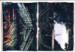

<!DOCTYPE HTML PUBLIC "-//W3C//DTD HTML 4.01 Transitional//EN"        "http://www.w3.org/TR/html4/loose.dtd">
<html lang="en">

<head>
<title>Shannon Johnson: The Ol' 55 - Henderson State University</title>
<meta http-equiv="Content-Language" content="en-us">
<meta http-equiv="Content-Type" content="text/html; charset=windows-1252">
<meta name="GENERATOR" content="Microsoft FrontPage 5.0">
<meta name="ProgId" content="FrontPage.Editor.Document">
<meta name="copyright" content="Copyright © 2002 Henderson State University">
<meta name="rating" content="General">
<meta name="Microsoft Border" content="none, default">
</head>

<body background="ARlogoborder.jpg" link="#800000" vlink="#800000" alink="#800000" bgcolor="#FFFFFF"><div style="background:#241b2e;color:#fff;font-family:Arial,sans-serif;font-size:13px;padding:7px 14px;text-align:center;position:relative;z-index:9999;"><a href="/books/arkansas-literary-forum" style="color:#fff;text-decoration:underline;">‚Üê Back to MarckBeggs.com</a> &nbsp;|&nbsp; <span style="opacity:.75;">Arkansas Literary Forum archive, preserved as originally published</span></div>

<div align="right">
  <table border="0" width="80%">
    <tr>
      <td width="100%" align="left">
        <blockquote>
        <p class="MsoNormal" ><b><font size="5" color="#800000" face="Arial">Shannon
        L. Johnson<o:p>
        </o:p>
        </font></b></p>
        </blockquote>
        <p class="MsoNormal" align="left" ><font size="4"><b>The
        Old ë55<o:p>
        &nbsp;
        </o:p>
        </b></font></p>
        <o:p>
        <p class="MsoNormal" align="right" ><font size="1" face="Arial">(Thomas
        Fernandez)&nbsp;&nbsp;</font>&nbsp;&nbsp;&nbsp;</p>
        <p class="MsoNormal" ><span style="font-size:12.0pt"><a href="art/Thomas1.jpg">
        </a></span><b><font size="7" color="#800000">G</font></b><span style="font-size:12.0pt">randpa
        eventually died.<span style="mso-spacerun: yes">&nbsp; </span>He
        lingered on a respirator with tubes down his nose and mouth and in his
        arms.<span style="mso-spacerun: yes">&nbsp; </span>In the three weeks he
        was at St. Joeís Mercy Hospital, his big lumberjack-like body melted
        away a little each day until there was nothing left but a few wrinkles
        in the sheets.<span style="mso-spacerun: yes">&nbsp; </span>I was there
        when he died.<span style="mso-spacerun: yes">&nbsp; </span>They took the
        respirator out and he gulped like a catfish in the bottom of a boat.<span style="mso-spacerun: yes">&nbsp;
        </span>His lips parted in rhythms as he searched for a pocket of air.<span style="mso-spacerun: yes">&nbsp;
        </span>The doctors said he was about to die anyway, so they removed the
        respirator.<span style="mso-spacerun: yes">&nbsp; </span>So he could die
        naturally, they said.<span style="mso-spacerun: yes">&nbsp; </span><o:p>
        </o:p>
        </span></p>
        <p class="MsoNormal" ><span style="font-size:12.0pt">At
        the funeral there began to circulate rumors that the car had killed him.<span style="mso-spacerun: yes">&nbsp;
        </span>In a sense, I guess that could be said.<span style="mso-spacerun: yes">&nbsp;
        </span>He worked on that car out in the cold damp garage.<span style="mso-spacerun: yes">&nbsp;
        </span>He had closed the garage doors to keep out some of the
        frigidness.<span style="mso-spacerun: yes">&nbsp; </span>Grandma found
        him sound asleep with his head under the hood.<span style="mso-spacerun: yes">&nbsp;
        </span>Grandpa recovered from the asphyxiation, but he had caught
        pneumonia out there in the freezing garage.<span style="mso-spacerun: yes">&nbsp;
        </span>There had been offers to buy the car, but he wouldnít sell.<span style="mso-spacerun: yes">&nbsp;
        </span>He couldnít.<span style="mso-spacerun: yes">&nbsp; </span>His
        parents loved it so much, they both died in it.<span style="mso-spacerun: yes">&nbsp;&nbsp;&nbsp;&nbsp;
        </span><o:p>
        </o:p>
        </span></p>
        <p class="MsoNormal" ><span style="font-size:12.0pt">The
        ë55, as we had always called it, belonged to my great grandparents.<span style="mso-spacerun: yes">&nbsp;
        </span>It was their first car, and it meant a lot to them because they
        traded what was left of their land out in Beaten, Arkansas, for it.<span style="mso-spacerun: yes">&nbsp;
        </span>Papa, my great grandpa, knew they would have to move to town
        because Mama had congestive heart failure and had to be nearer the
        doctorís officeñìa real city doctor, no country witch doctors,î
        Grandpa had told them.<span style="mso-spacerun: yes">&nbsp; </span>They
        moved in with Grandma and Grandpa.<span style="mso-spacerun: yes">&nbsp;
        </span>Papa wanted to preserve a bit of independence and thatís why he
        bought the car.<span style="mso-spacerun: yes">&nbsp; </span>On Sundays,
        they drove to church.<span style="mso-spacerun: yes">&nbsp; </span>Afterward,
        with picnic basket and their small white and tan mutt Suzie in the vast
        back seat,<span style="mso-spacerun: yes">&nbsp; </span>they drove out
        somewhere and spent the day until time for evening church.<o:p>
        </o:p>
        </span></p>
        <p class="MsoNormal" ><span style="font-size:12.0pt">When
        Mama became too ill to ride in the car, Papa would pack the picnic
        basket, Suzie, Mama, and put them in the car.<span style="mso-spacerun: yes">&nbsp;
        </span>And theyíd just sit there.<span style="mso-spacerun: yes">&nbsp;
        </span>Theyíd sit there and eat their lunch.<span style="mso-spacerun: yes">&nbsp;
        </span>I remember as a child getting the idea that Papa and Mama were
        the only two people who were really in love.<span style="mso-spacerun: yes">&nbsp;
        </span>I tried desperately to think of other people who were really in
        love.<span style="mso-spacerun: yes">&nbsp; </span>Papa and Mama for
        sure, and my 12-year-old friend Shelly.<span style="mso-spacerun: yes">&nbsp;
        </span>She and Todd were in love because they wrote love letters back
        and forth and they were together all the time at school.<span style="mso-spacerun: yes">&nbsp;
        </span>I asked Papa how he met Mama.<span style="mso-spacerun: yes">&nbsp;
        </span>I was thinking maybe they had met on the Mayflower.<span style="mso-spacerun: yes">&nbsp;&nbsp;
        </span>ìWhen I was just a kid of a boy,î he said.<span style="mso-spacerun: yes">&nbsp;
        </span>ìWe went to school over to Cedar Point.<span style="mso-spacerun: yes">&nbsp;
        </span>I was a rascal always pulling pranks and your great grandma was a
        nice, proper girl, but she was puny.<span style="mso-spacerun: yes">&nbsp;
        </span>I felt I could fatten her up some, so I said, ëone day Iím
        gonna marry that girl and take care of herí.î<span style="mso-spacerun: yes">&nbsp;
        </span><o:p>
        </o:p>
        </span></p>
        <p class="MsoNormal" ><span style="font-size:12.0pt">Eventually,
        they bought a little mobile home and put it out behind Grandmaís and
        Grandpaís house.<span style="mso-spacerun: yes">&nbsp; </span>But that
        car had become a part of their existence.<span style="mso-spacerun: yes">&nbsp;
        </span>One night after church Grandpa went to check on them.<span style="mso-spacerun: yes">&nbsp;
        </span>He found Papa asleep in the car and Mama <i>dead</i> asleep
        leaning up against his shoulder.<span style="mso-spacerun: yes">&nbsp; </span>Papa
        wanted to bury Mama in the car, but Grandpa talked him out of it.<span style="mso-spacerun: yes">&nbsp;
        </span>Papa went straight down hill after Mama died.<span style="mso-spacerun: yes">&nbsp;
        </span>He took to the car and hardly ever left it.<span style="mso-spacerun: yes">&nbsp;
        </span>Grandma brought him food, and she and Grandpa took him in the
        house every other day or so to clean him up.<span style="mso-spacerun: yes">&nbsp;
        </span>Once I brought a friend over to prove my great grandpa lived in a
        car.<span style="mso-spacerun: yes">&nbsp; </span>I won the bet, but my
        friend told everyone back at school how smelly and scraggly my great
        grandpa was.<span style="mso-spacerun: yes">&nbsp; </span>It wasnít
        long before a real bad stink came from that car.<span style="mso-spacerun: yes">&nbsp;
        </span>Papa was dead in the car, but he had seen to his burial attire:
        his picnic duds were hanging just inside his closet door, his straw hat
        upside down on the chest of drawers.<span style="mso-spacerun:
yes">&nbsp; </span>Thatís what he was buried in, right beside Mama, both
        dressed for a picnicñin Beulah.<o:p>
        </o:p>
        </span></p>
        <p class="MsoNormal" ><span style="font-size:12.0pt">After
        Grandpa died, aunts, uncles and cousins came around to see what they
        could get.<span style="mso-spacerun: yes">&nbsp; </span>I moved in with
        Grandma to help situate things and to protect her from the hounds.<span style="mso-spacerun:
yes">&nbsp; </span>I had been mooching off of my mother since I had been fired
        from the <i>Daily Recor</i>dñfor sleeping during a City Council
        meetingñand I desperately needed a change.<span style="mso-spacerun: yes">&nbsp;
        </span>I have been searching for inspiration to write a book all of my
        life.<span style="mso-spacerun: yes">&nbsp; </span>Instead, I have had
        nothing but chronic writerís block.<span style="mso-spacerun: yes">&nbsp;
        </span>Mother tried to inspireñread: poisonñme with her fluffy
        purple romance prosody.<span style="mso-spacerun: yes">&nbsp; </span>I
        thought maybe Grandma could help.<span style="mso-spacerun: yes">&nbsp; </span>Instead,
        she tried to save me.<span style="mso-spacerun: yes">&nbsp; </span>I
        soon found myself a sinner in the hands of angry Baptists.<span style="mso-spacerun: yes">&nbsp;
        </span>Grandma had my baptism all arranged before I had time hold my
        breath.<span style="mso-spacerun: yes">&nbsp; </span>I went to church
        looking for story ideas, always looking for material.<span style="mso-spacerun: yes">&nbsp;
        </span>Those Baptists didnít like me going into their closets looking
        for skeletons.<span style="mso-spacerun: yes">&nbsp; </span>And I
        didnít like church.<span style="mso-spacerun: yes">&nbsp; </span>Although
        I must admit, church people are very good to their own, especially when
        someone dies.<span style="mso-spacerun: yes">&nbsp; </span>I thought
        organized religion a lot like a turnip plantñpart of itís really
        tasty and nutritious, and part of it is rather bitter and as it looks a
        lot like mashed potatoes, a cruel deception.<o:p>
        </o:p>
        </span></p>
        <p class="MsoNormal" ><span style="font-size:12.0pt"><span style="mso-spacerun: yes">&nbsp;</span>My
        friend Chance, Victoria Chancellor, and I often have philosophical
        discussions about religion.<span style="mso-spacerun:
yes">&nbsp; </span>She has tried on every religion known from Zoroastrianism to
        Jehovahís Witness.<span style="mso-spacerun: yes">&nbsp; </span>ìIím
        a spiritual atheist,î she once declared.<span style="mso-spacerun: yes">&nbsp;
        </span><o:p>
        </o:p>
        </span></p>
        <p class="MsoNormal" ><span style="font-size:12.0pt">ìAn
        atheist, huh?î<span style="mso-spacerun: yes">&nbsp; </span>I
        whispered it because we were in the garage, my grandpaís garage.<span style="mso-spacerun: yes">&nbsp;
        </span>My grandpa, church deacon, member of the choir.<span style="mso-spacerun: yes">&nbsp;
        </span>Grandpa was a kind man, but he believed the Good Book often quite
        literally.<o:p>
        </o:p>
        </span></p>
        <p class="MsoNormal" ><span style="font-size:12.0pt">ìNow
        donít get all freaked out on me.î&nbsp; She was about to launch into one
        of her hypotheses of self-realization.<o:p>
        </o:p>
        </span></p>
        <p class="MsoNormal" ><span style="font-size:12.0pt">Sometimes
        I just liked to step back and watch Chance work.<span style="mso-spacerun:
yes">&nbsp; </span>There wasnít much opportunity for that because, by nature,
        she didnít like to do work.<span style="mso-spacerun: yes">&nbsp; </span>She
        liked the idea of certain types of work.<span style="mso-spacerun: yes">&nbsp;
        </span>Right now, though, she was tinkering with the old car.<span style="mso-spacerun:
yes">&nbsp; </span>She loved antiques, and so I guess finishing Grandpaís car
        didnít really qualify as work.<span style="mso-spacerun: yes">&nbsp; </span>ìWe
        ought to take this thing for a drive.î Her head was hidden under the
        hood.<span style="mso-spacerun: yes">&nbsp; </span>All I could see were
        her overalls and a dirty red grease rag hanging out of her pocket.<span style="mso-spacerun:
yes">&nbsp; </span>I thought, she could be anybody in those big overalls, but
        then I pictured the rest of her and I had to laugh.<span style="mso-spacerun: yes">&nbsp;
        </span>Her short brown hair was matted into three and four inch dread
        locks and a little silver hoop pierced her left nostril.<span style="mso-spacerun: yes">&nbsp;
        </span>Grandma always said Chance was full of the stuff of mule traders.<span style="mso-spacerun: yes">&nbsp;
        </span>She told some good stories.<span style="mso-spacerun: yes">&nbsp;
        </span>I always wanted to believe her because her stories were more
        exciting than my life.<span style="mso-spacerun: yes">&nbsp; </span>ìDe
        black woman is de mule uh de world so fur as Ah can see,î she was
        given to misquoting Zora Neale Hurston lately.<span style="mso-spacerun: yes">&nbsp;
        </span>ìEspecially in the South.<span style="mso-spacerun: yes">&nbsp;
        </span>And thatís why Iím gonna haul my ass out of here, soon.î<o:p>
        </o:p>
        </span></p>
        <p class="MsoNormal" ><span style="font-size:12.0pt">ìUh,
        Chance, youíre using an adjective to describe yourself that doesnít
        quite fit.î<o:p>
        </o:p>
        </span></p>
        <p class="MsoNormal" ><span style="font-size:12.0pt">ìHuh?î<o:p>
        </o:p>
        </span></p>
        <p class="MsoNormal" ><span style="font-size:12.0pt">ìYouíre
        not black!î<o:p>
        </o:p>
        </span></p>
        <p class="MsoNormal" ><span style="font-size:12.0pt">ìHow
        do you know?î<o:p>
        </o:p>
        </span></p>
        <p class="MsoNormal" ><span style="font-size:12.0pt">ìOkay,
        you are whatever you say you are.î I realized a long time ago that you
        canít argue with someone who is insane.<o:p>
        </o:p>
        </span></p>
        <p class="MsoNormal" ><span style="font-size:12.0pt">Chance
        is creative and artistic.<span style="mso-spacerun: yes">&nbsp; </span>She
        is a free spirit, albeit tortured in some way.<span style="mso-spacerun: yes">&nbsp;
        </span>I think it hurts her to proclaim her atheism.<span style="mso-spacerun: yes">&nbsp;
        </span>She is a feminist, and that is the problem she has with religion.<span style="mso-spacerun: yes">&nbsp;
        </span>We agree on this.<span style="mso-spacerun:
yes">&nbsp; </span>Religion in the Bible Belt is not woman-friendly.<span style="mso-spacerun: yes">&nbsp;
        </span>ìGod endorses man because God is male.<span style="mso-spacerun: yes">&nbsp;
        </span>Man created God, and God created man.<span style="mso-spacerun: yes">&nbsp;
        </span>Woman was an after-thought, and she is the real root of all evil,
        according to man and to God.<span style="mso-spacerun:
yes">&nbsp; </span>Eve screwed it all up for all of humankind.<span style="mso-spacerun: yes">&nbsp;
        </span>Can you imagine what society would be like if God were a women,
        if all references to God were female specific,î my friend preached to
        me as she turned red in the face.<span style="mso-spacerun: yes">&nbsp; </span>She
        took religion and other peopleís ideologies personally.<span style="mso-spacerun: yes">&nbsp;
        </span>Good thing we mostly agreed.<o:p>
        </o:p>
        </span></p>
        <p class="MsoNormal" ><span style="font-size:12.0pt"><span style="mso-spacerun: yes">&nbsp;</span>ìWhatís
        your grandma gonna to do with this thing, anyway?î<o:p>
        </o:p>
        </span></p>
        <p class="MsoNormal" ><span style="font-size:12.0pt">ìI
        donít know.<span style="mso-spacerun: yes">&nbsp; </span>Sell it, I
        guess.<span style="mso-spacerun: yes">&nbsp; </span>Do you think itíd
        make it around the block?î<o:p>
        </o:p>
        </span></p>
        <p class="MsoNormal" ><span style="font-size:12.0pt">ìHell,
        yeah.<span style="mso-spacerun: yes">&nbsp; </span>Letís start it
        up.î<o:p>
        </o:p>
        </span></p>
        <p class="MsoNormal" ><span style="font-size:12.0pt">ìMaybe
        I better ask Grandma,î<o:p>
        </o:p>
        </span></p>
        <p class="MsoNormal" ><span style="font-size:12.0pt">ìYou
        know sheíll say yes.î<o:p>
        </o:p>
        </span></p>
        <p class="MsoNormal" ><span style="font-size:12.0pt">With
        a little manual choke manipulation we got the car started.<span style="mso-spacerun: yes">&nbsp;
        </span>I was afraid to let Chance behind the wheel.<span style="mso-spacerun: yes">&nbsp;
        </span>I guess I wanted to believe her virtuosity in all things, but I
        had inherited a good dose of skepticism from Grandma.<span style="mso-spacerun: yes">&nbsp;
        </span>ìWe need to take and blow the mutha out,î Chance said
        snapping her red rag at the car.<o:p>
        </o:p>
        </span></p>
        <p class="MsoNormal" ><span style="font-size:12.0pt">ìBlow
        it up, you mean.î<o:p>
        </o:p>
        </span></p>
        <p class="MsoNormal" ><span style="font-size:12.0pt">ìHarley
        Jane?<span style="mso-spacerun: yes">&nbsp; </span>What are you two
        doing out here?î<span style="mso-spacerun: yes">&nbsp; </span>Grandma
        always looked like sheíd just traveled through Danteís inferno.<span style="mso-spacerun: yes">&nbsp;
        </span>I think it has something to do with the Puritan work ethic and
        spending 18 hours a day cooking.<span style="mso-spacerun: yes">&nbsp; </span>Also,
        Grandma is Irishñfair skinned with wild red hair, red when she was
        younger.<span style="mso-spacerun: yes">&nbsp; </span>Now her hair is
        just wild, grayish-red, and Alfred Einstein-y.<o:p>
        </o:p>
        </span></p>
        <p class="MsoNormal" ><span style="font-size:12.0pt">ìHey,
        Grandma, Chance thinks we ought to take the car out for ride.î<o:p>
        </o:p>
        </span></p>
        <p class="MsoNormal" ><span style="font-size:12.0pt">ìWell,
        Iíve got dinner ready.<span style="mso-spacerun: yes">&nbsp; </span>Yíall
        better come in and eat something before you dry up and blow away.î<span style="mso-spacerun: yes">&nbsp;
        </span>Grandma spit root beer-colored snuff into a Del Monte Green Beans
        can she was carrying, turned, and walked back up to the house.<o:p>
        </o:p>
        </span></p>
        <p class="MsoNormal" ><span style="font-size:12.0pt">Food
        also has something to do with Puritan strictures, or maybe itís a
        Southern thing: a Southern woman looks for any occasion to cook, and her
        company is supposed to show their appreciation by eating three times
        more than they normally would.<span style="mso-spacerun: yes">&nbsp; </span>It
        was hard to be cynical about food, however.<span style="mso-spacerun: yes">&nbsp;
        </span>Grandmaís food was so good.<span style="mso-spacerun: yes">&nbsp;
        </span>Chance, the vegetarian, delighted in Grandmaís cornbread, poke
        salat, squash soup, fried okra, fresh tomatoes.<span style="mso-spacerun: yes">&nbsp;
        </span>I, feigning geographic explorer to a little-known exotic country,
        would try anything weird.<span style="mso-spacerun: yes">&nbsp; </span>I
        enjoyed challenging Chanceís fortitude as I gnawed and pulled on a
        pickled pigís foot.<span style="mso-spacerun: yes">&nbsp; </span>The
        idea of pickled pigís anything is pretty awful, but I featured myself
        a method actor, and so yummy it was, as long as anyone was watching my
        performance.<o:p>
        </o:p>
        </span></p>
        <p class="MsoNormal" ><span style="font-size:12.0pt">While
        we ate Grandma sometimes would talk about the olden days.<span style="mso-spacerun: yes">&nbsp;
        </span>She would begin by talking about someone in her church, and since
        we didnít know most of those people we would urge her toward a segue
        into the past.<span style="mso-spacerun: yes">&nbsp; </span>While
        sopping up bean juice with cornbread or sprinkling salt on slices of
        garden grown cucumber, she would tell how when she was young Papa would
        catch a possum for supper.<span style="mso-spacerun: yes">&nbsp; </span>But
        they couldnít eat it right away--because possums eat anythingñso
        theyíd keep it under an old wash tub and feed it produce like cabbage
        and carrots and turnips and what not.<span style="mso-spacerun: yes">&nbsp;
        </span>Theyíd do this for a day or so until the animalís system was
        cleaned out.<span style="mso-spacerun: yes">&nbsp; </span>Then theyíd
        kill it and eat it.<span style="mso-spacerun: yes">&nbsp; </span>She
        talked about scrambling squirrel brains with eggs, roasting rabbits, and
        barbequing raccoons.<span style="mso-spacerun: yes">&nbsp; </span>Ethnic
        foodsñand I consider Southern cooking ethnicñalways sounded
        scrumptious to me.<o:p>
        </o:p>
        </span></p>
        <p class="MsoNormal" ><span style="font-size:12.0pt">ìWe
        ought to fix up the ë55 and go on a road trip.<span style="mso-spacerun: yes">&nbsp;
        </span>What do you think, Grandma?î<span style="mso-spacerun: yes">&nbsp;
        </span>I was pretty much just joking.<o:p>
        </o:p>
        </span></p>
        <p class="MsoNormal" ><span style="font-size:12.0pt">ìA
        drive up to Albert Pike for a picnic would be nice,î Grandma said
        without a trace of doubt that the old car would make it.<span style="mso-spacerun: yes">&nbsp;
        </span>ìMe and your grandpa used to love to go up there.î<o:p>
        </o:p>
        </span></p>
        <p class="MsoNormal" ><span style="font-size:12.0pt">ìYou
        think that old car will go that far and back?î I was an explorer, but
        I am also very pragmatic and anal retentive.<span style="mso-spacerun: yes">&nbsp;
        </span>Albert Pike was about a two hour drive, one way.<o:p>
        </o:p>
        </span></p>
        <p class="MsoNormal" ><span style="font-size:12.0pt">ìOh,
        I donít see why not.î<span style="mso-spacerun: yes">&nbsp; </span>She
        obviously didnít understand how far automotive technology had come.<span style="mso-spacerun: yes">&nbsp;
        </span><o:p>
        </o:p>
        </span></p>
        <p class="MsoNormal" ><span style="font-size:12.0pt">ìGrandma,
        that carís eight years older than me,î I said.<o:p>
        </o:p>
        </span></p>
        <p class="MsoNormal" ><span style="font-size:12.0pt">ìAnd
        look how young you are.<span style="mso-spacerun: yes">&nbsp; </span>Besides,
        just because somethingís old donít mean itís lost its
        usefulness.î<o:p>
        </o:p>
        </span></p>
        <p class="MsoNormal" ><span style="font-size:12.0pt">ìI
        told you so,î Chance sung under her breath.<span style="mso-spacerun: yes">&nbsp;
        </span>ìCome on Harley.<span style="mso-spacerun: yes">&nbsp; </span>Letís
        start ëer up and take her around the block.î<o:p>
        </o:p>
        </span></p>
        <p class="MsoNormal" ><span style="font-size:12.0pt">Chance
        backed the big black Sunday-go-to-meetiní car out of the carport and
        up the hill, but I made her let me drive.<span style="mso-spacerun: yes">&nbsp;
        </span>Sitting behind the steering wheel, I was taken back more than
        thirty years.<span style="mso-spacerun: yes">&nbsp; </span>It was 1959,
        and Papa was driving to some secluded picnic area that only he and Mama
        and Suzie knew.<span style="mso-spacerun: yes">&nbsp; </span>I had never
        driven a column shift, but I was learning.<span style="mso-spacerun: yes">&nbsp;
        </span>The steering wheel was huge.<span style="mso-spacerun: yes">&nbsp;
        </span>I was learning and enjoying the little idiosyncrasies this car
        carried.<span style="mso-spacerun: yes">&nbsp; </span>Grandpa had
        painted the dash red; the glove compartment door kept falling open; one
        of the little vent windows whistled; and the passenger-side window had
        what looked like a b.b. hole in it.<span style="mso-spacerun: yes">&nbsp;
        </span>For now, I had completely forgotten that this car had already
        killed at least three people.<o:p>
        </o:p>
        </span></p>
        <p class="MsoNormal" ><span style="font-size:12.0pt">When
        Chance and I got back, my mother was at grandmaís.<span style="mso-spacerun:
yes">&nbsp; </span>Chance liked Mother.<span style="mso-spacerun: yes">&nbsp; </span>In
        her frilly, romantic, deluded world, she was simply a misunderstood
        artist, Chance said.<span style="mso-spacerun: yes">&nbsp; </span>ìJust
        look at what sheís done with that trailer.î<span style="mso-spacerun: yes">&nbsp;
        </span>Mother lived in a mobile home which she had decorated like the
        Palace of Versailles.<span style="mso-spacerun: yes">&nbsp; </span>She
        lived in a Baroque world.<span style="mso-spacerun: yes">&nbsp; </span>Everything
        to the extreme.<span style="mso-spacerun: yes">&nbsp; </span>One school
        friend of mine put it nicely when she exclaimed, ìOooo, look at that
        upholstery and those curtains.<span style="mso-spacerun: yes">&nbsp; </span>Isnít
        it a bit busy?î<o:p>
        </o:p>
        </span></p>
        <p class="MsoNormal" ><span style="font-size:12.0pt">Busy?<span style="mso-spacerun: yes">&nbsp;
        </span>My mother doesnít know she is an authority on Baroque style.<span style="mso-spacerun: yes">&nbsp;
        </span>It just comes naturally.<span style="mso-spacerun: yes">&nbsp; </span>Grandma
        calls her Miss Hoity-Toity, but she isnít a snob.<span style="mso-spacerun: yes">&nbsp;
        </span>She lives in a place inside her imagination where glass slippers
        do exist.<span style="mso-spacerun: yes">&nbsp; </span>A place where
        beautiful muscle-bound men with olive skin and foreign accents just wait
        to indulge their heroineís starving sexual compulsions.<span style="mso-spacerun: yes">&nbsp;
        </span>My mother is the heroine, and she is waiting for her Fabio.<o:p>
        </o:p>
        </span></p>
        <p class="MsoNormal" ><span style="font-size:12.0pt">When
        we came inside, Grandma was trying to force-feed Mother.<span style="mso-spacerun: yes">&nbsp;
        </span><o:p>
        </o:p>
        </span></p>
        <p class="MsoNormal" ><span style="font-size:12.0pt">ìIím
        not hungry.<span style="mso-spacerun: yes">&nbsp; </span>I told you, I
        just ate a big pretzel at the mall.î Mother pushed the plate back away
        from her.<o:p>
        </o:p>
        </span></p>
        <p class="MsoNormal" ><span style="font-size:12.0pt">ìPretzel
        schmetzel.<span style="mso-spacerun: yes">&nbsp; </span>You need to eat
        something good for you.<span style="mso-spacerun: yes">&nbsp; </span>Are
        you too hoity-toity for home cooking?<span style="mso-spacerun: yes">&nbsp;
        </span>Iíll swan youíre going to blow away with these two.î<span style="mso-spacerun: yes">&nbsp;
        </span>Grandma nodded toward me and Chance and pushed a plate containing
        purple hull peas, fresh tomatoes, fried okra, and cornbread at Mother.<span style="mso-spacerun: yes">&nbsp;
        </span>ìI canít get them to eat a thing either.î<o:p>
        </o:p>
        </span></p>
        <p class="MsoNormal" ><span style="font-size:12.0pt">I
        would not allow her to make me feel guilty.<span style="mso-spacerun: yes">&nbsp;
        </span>ìGrandma, I ate two helpings of everything.<span style="mso-spacerun:
yes">&nbsp; </span>Sheíll eat when sheís hungry.î<span style="mso-spacerun: yes">&nbsp;
        </span>I often felt like Motherís protector, but I didnít want to be
        because I wanted run off on an expedition to Katmandu or Machu Picchu
        or somewhere and write my book.<span style="mso-spacerun: yes">&nbsp; </span>And
        I didnít want to have to worry about anyone.<span style="mso-spacerun: yes">&nbsp;
        </span>ìMother, did Grandma tell you weíre going to take the ë55
        on a road trip?î<o:p>
        </o:p>
        </span></p>
        <p class="MsoNormal" ><span style="font-size:12.0pt">ìWho
        is?î<span style="mso-spacerun: yes">&nbsp; </span>She was forking her
        peas and occasionally depositing one in her mouth.<span style="mso-spacerun: yes">&nbsp;
        </span>ìPapaís old car?î<o:p>
        </o:p>
        </span></p>
        <p class="MsoNormal" ><span style="font-size:12.0pt">ìWe
        are.<span style="mso-spacerun: yes">&nbsp; </span>Whoever wants to go.<span style="mso-spacerun: yes">&nbsp;
        </span>You want to go?î<span style="mso-spacerun:
yes">&nbsp; </span>I really didnít think sheíd bite.<o:p>
        </o:p>
        </span></p>
        <p class="MsoNormal" ><span style="font-size:12.0pt">ìWhere
        are we going?<span style="mso-spacerun: yes">&nbsp; </span>To New
        Orleans?<span style="mso-spacerun: yes">&nbsp; </span>You know itís
        very French down there.î<span style="mso-spacerun: yes">&nbsp; </span><o:p>
        </o:p>
        </span></p>
        <p class="MsoNormal" ><span style="font-size:12.0pt">ìWhoa,
        yeah.î<span style="mso-spacerun: yes">&nbsp; </span>Chance was already
        in favor of a nine hour drive to the French Quarter.<span style="mso-spacerun: yes">&nbsp;
        </span>ìI have a friend down there.<span style="mso-spacerun: yes">&nbsp;
        </span>Iím sure we could stay with her.î<o:p>
        </o:p>
        </span></p>
        <p class="MsoNormal" ><span style="font-size:12.0pt">ìWell,
        we were thinking more like a day trip.<span style="mso-spacerun: yes">&nbsp;
        </span>Sort of ...î<span style="mso-spacerun: yes">&nbsp; </span>I was
        usually the planner of these family get-togethers, but I felt I was
        losing control of this situation. <o:p>
        </o:p>
        </span></p>
        <p class="MsoNormal" ><span style="font-size:12.0pt">ìIt
        wonít even take a day to get to New Orleans,î Mother said.<span style="mso-spacerun: yes">&nbsp;
        </span>ìI can get a half day off on Friday, and we can spend Saturday
        there.<span style="mso-spacerun: yes">&nbsp; </span>Mother, youíve
        always wanted to go to New Orleans, havenít you?î<span style="mso-spacerun: yes">&nbsp;
        </span>My mother was trying to convince her mother that this trip was
        something she had always wanted.<span style="mso-spacerun:
yes">&nbsp; </span>I was picturing the big black car stranded in the Delta, the
        four of usña huddle of women in a strange land of darker shades and
        meager livingñlocked inside terrified to move.<o:p>
        </o:p>
        </span></p>
        <p class="MsoNormal" ><span style="font-size:12.0pt">ìThatís
        kind of a big test to put the old car through,î I said trying to ease
        Mother into a different, shorter direction.<o:p>
        </o:p>
        </span></p>
        <p class="MsoNormal" ><span style="font-size:12.0pt">ìWell,
        where else is there?î<span style="mso-spacerun: yes">&nbsp; </span>She
        was pouting, but I knew I could change her mind.<o:p>
        </o:p>
        </span></p>
        <p class="MsoNormal" ><span style="font-size:12.0pt">ìWe
        could drive over to Tallequah and visit Sequoiaís cabin.î<span style="mso-spacerun: yes">&nbsp;
        </span>Mother wasnít listening to my suggestion.<span style="mso-spacerun: yes">&nbsp;
        </span>She was rummaging through her purse, and Chance was already
        sipping coffee at the CafÈ DuMonde.<span style="mso-spacerun: yes">&nbsp;&nbsp;
        </span><o:p>
        </o:p>
        </span></p>
        <p class="MsoNormal" ><span style="font-size:12.0pt">ìLetís
        go up to War Eagle,î Grandma said coming back to the table with some
        old brochures.<span style="mso-spacerun: yes">&nbsp; </span>I knew she
        and Grandpa had gone up there a few times.<span style="mso-spacerun: yes">&nbsp;
        </span>All I knew about the place was that it was up in the Ozarks, and
        you could get fresh cornmeal there at the mill.<span style="mso-spacerun: yes">&nbsp;
        </span>Driving up those twisty mountains in the car called for a little
        more faith than I could muster.<o:p>
        </o:p>
        </span></p>
        <p class="MsoNormal" ><span style="font-size:12.0pt">ìI
        think your momís right,î Chance was saying.<span style="mso-spacerun: yes">&nbsp;
        </span>ìWe gotta go to New Orleans.<span style="mso-spacerun: yes">&nbsp;
        </span>Thereís something for all of us there.<span style="mso-spacerun: yes">&nbsp;
        </span>Itís all down hill from here.î She smiled at her pun, and I
        was thinking she would be a sight anywhere more conservative than New
        Orleans.<span style="mso-spacerun: yes">&nbsp; </span>ìWe can go to
        Cajun country, and Plantation country, and museums, and the Vieux Carre,
        thereís lots we can do.<span style="mso-spacerun: yes">&nbsp; </span>That
        old car will make it.î<span style="mso-spacerun: yes">&nbsp; </span>Chance
        was campaigning for New Orleans, and it was working.<span style="mso-spacerun: yes">&nbsp;
        </span>I donít know how it worked on Grandma, but it did.<span style="mso-spacerun: yes">&nbsp;
        </span>I guess there is a bit of adventure in her that I never
        considered.<o:p>
        </o:p>
        </span></p>
        <p class="MsoNormal" ><span style="font-size:12.0pt">ìDonít
        yíall think you better take that car by Delbertís and let them give
        it a good look?î<span style="mso-spacerun: yes">&nbsp; </span>With
        those words from Grandma, I knew we were going to New Orleans.<span style="mso-spacerun: yes">&nbsp;
        </span>The trip was set for the following week.<span style="mso-spacerun: yes">&nbsp;
        </span><o:p>
        </o:p>
        </span></p>
        <p class="MsoNormal" ><span style="font-size:12.0pt">Before
        we took the car to Delbertís Full-Service Gas Station and Garage,
        Chance and I gave it a gulp of gas treatment and took it out on the
        highway and blew it out.<span style="mso-spacerun: yes">&nbsp; </span>Then
        we cleaned the carburetor, flushed the radiator, changed the oil,
        cleaned and shined the interior, washed and waxed the car.<span style="mso-spacerun: yes">&nbsp;
        </span>Then we let Delbertís check it out.<span style="mso-spacerun: yes">&nbsp;
        </span>Delbert, Jr., replaced the fan belt and sold us an extra, and he
        installed new wiper blades. All the lights worked, and the horn.<span style="mso-spacerun: yes">&nbsp;
        </span>We passed inspection, were registered, licensed, and insured.<span style="mso-spacerun: yes">&nbsp;
        </span>Now all we needed was a good road map.<o:p>
        </o:p>
        </span></p>
        <p class="MsoNormal" ><span style="font-size:12.0pt">Mother
        decided to take off Thursday afternoon, so weíd have two whole days
        down in the Big Easy.<span style="mso-spacerun: yes">&nbsp; </span>The
        three of us were packed and waiting for her at two oíclock.<span style="mso-spacerun: yes">&nbsp;
        </span>Lady Godivaís Hair Salon would survive the weekend without her,
        but today she had to do an eleven-thirty perm.<span style="mso-spacerun: yes">&nbsp;
        </span>We expected her any minute.<o:p>
        </o:p>
        </span></p>
        <p class="MsoNormal" ><span style="font-size:12.0pt">The
        trunk of the ë55 was vast, but Motherís suitcase, dress bag, make-up
        kit, hat boxes, and shoe boxes quickly filled all but the tiniest
        niches.<span style="mso-spacerun: yes">&nbsp; </span>Those were left for
        the rest of us.<span style="mso-spacerun: yes">&nbsp; </span>Chance and
        I traveled light; we could practically wear the same clothes we started
        in save for a couple changes of underwear.<span style="mso-spacerun: yes">&nbsp;
        </span>Grandma packed a simple supply of personals and brought several
        spit cans, so she could throw them away as they became used.<span style="mso-spacerun: yes">&nbsp;
        </span>But the food.<span style="mso-spacerun: yes">&nbsp; </span>My
        gosh!<span style="mso-spacerun: yes">&nbsp; </span>It seemed as though
        we were headed for the old country church and dinner on the grounds.<span style="mso-spacerun: yes">&nbsp;
        </span>There was fried chicken and fried pies, lunch meat, bread,
        pickles, tomatoes, potato salad, potato chips, sodas, cookies,
        mayonnaise, mustard, ketchup, and candyñhard candy, jellies, and
        chocolate.<span style="mso-spacerun: yes">&nbsp; </span>We had a cooler,
        a picnic basket, and a grocery sack packed with goodies all in the back
        seat.<span style="mso-spacerun: yes">&nbsp; </span>Still, there was
        plenty of room left for two people, a blanket and two pillows.<span style="mso-spacerun:
yes">&nbsp; </span>I drove the first shift.<o:p>
        </o:p>
        </span></p>
        <p class="MsoNormal" ><span style="font-size:12.0pt">ìOkay,
        itís three oíclock.<span style="mso-spacerun: yes">&nbsp; </span>Letís
        see what kind of time we make.î<span style="mso-spacerun: yes">&nbsp; </span>I
        carried a little notebook: I wanted to chart expenses, but mostly I
        wanted to see what kind of mileage this thing would get.<span style="mso-spacerun: yes">&nbsp;
        </span>And I wanted to discipline myself into recording things: sights,
        sounds, details: concrete and abstract.<span style="mso-spacerun: yes">&nbsp;
        </span>Always looking for material.<span style="mso-spacerun: yes">&nbsp;
        </span><o:p>
        </o:p>
        </span></p>
        <p class="MsoNormal" ><span style="font-size:12.0pt">We
        took 270 East to Malvern and kept on going to Pine Bluff.<span style="mso-spacerun:
yes">&nbsp; </span>The car ran wonderfully.<span style="mso-spacerun: yes">&nbsp;
        </span>No trouble at all, and everyone was in an excited mood.<span style="mso-spacerun: yes">&nbsp;
        </span>Grandma was excited, I could tell.<span style="mso-spacerun: yes">&nbsp;
        </span>ìAre you all right, Harley Jane?<span style="mso-spacerun: yes">&nbsp;
        </span>She asked.<span style="mso-spacerun: yes">&nbsp; </span>ìDo you
        need me to drive for a while?î<span style="mso-spacerun: yes">&nbsp; </span><o:p>
        </o:p>
        </span></p>
        <p class="MsoNormal" ><span style="font-size:12.0pt">ìIím
        all right for now, thanks.î<span style="mso-spacerun: yes">&nbsp; </span>There
        was construction after we got on 65 at Pine Bluff, and all Motherís
        and Grandmaís fussing and Chance trying to talk to me was making it
        hard for me to see.<span style="mso-spacerun: yes">&nbsp; </span>Soon we
        were at a halt.<span style="mso-spacerun: yes">&nbsp; </span>ìUgh,
        this will mess up my calculations,î I said it mostly to myself.<o:p>
        </o:p>
        </span></p>
        <p class="MsoNormal" ><span style="font-size:12.0pt">ìItís
        all part of the trip, relax.î<span style="mso-spacerun: yes">&nbsp; </span>Chance
        was the quintessential hippie going with the flow.<span style="mso-spacerun:
yes">&nbsp; </span>As far as tension, I was a tight high note, and she was so
        loose she made no sound at all except what only whales could hear.<span style="mso-spacerun: yes">&nbsp;
        </span>ìWhoa, check that out.<span style="mso-spacerun: yes">&nbsp; </span>Ah,
        man, thatís horrible.<span style="mso-spacerun: yes">&nbsp; </span>Iím
        getting it.î<o:p>
        </o:p>
        </span></p>
        <p class="MsoNormal" ><span style="font-size:12.0pt">ìWha
        ... Wait!î<span style="mso-spacerun: yes">&nbsp; </span>Before I could
        figure out what she was looking at, Chance had jumped out of the car in
        the middle of constructionñonly two-lanes now, big semi trucks headed
        in our direction with a temporary concrete barrier being the only thing
        separating us.<span style="mso-spacerun: yes">&nbsp; </span>Even though
        we were sandwiched between two semis, Chance had seen the small white
        mass squeezed between traffic and the concrete wall.<span style="mso-spacerun: yes">&nbsp;
        </span>It looked like dirty rags or paper, but it sure didnít look
        like a chicken.<o:p>
        </o:p>
        </span></p>
        <p class="MsoNormal" ><span style="font-size:12.0pt">Chance
        jumped back in the car just as traffic started to move.<span style="mso-spacerun: yes">&nbsp;
        </span>ìI donít think itís hurt, but itís definitely in
        shock,î she said.<o:p>
        </o:p>
        </span></p>
        <p class="MsoNormal" ><span style="font-size:12.0pt">ìLands!<span style="mso-spacerun: yes">&nbsp;
        </span>What in the world are you going to do with that?î Grandma asked
        hugging her Sue B Chicken and Dumplings spit can close.<span style="mso-spacerun: yes">&nbsp;
        </span>ìLands.<span style="mso-spacerun: yes">&nbsp; </span>I canít
        believe youíd bring that nasty thing in here.<span style="mso-spacerun: yes">&nbsp;
        </span>Cover up the food.î<o:p>
        </o:p>
        </span></p>
        <p class="MsoNormal" ><span style="font-size:12.0pt">ìI
        couldnít just leave it there.<span style="mso-spacerun: yes">&nbsp; </span>It
        would have been killed.<span style="mso-spacerun: yes">&nbsp; </span>Some
        asshole, I mean, idiot dropped it off his truck or something. Hey,
        chicky, chicky, are you hurt?î<o:p>
        </o:p>
        </span></p>
        <p class="MsoNormal" ><span style="font-size:12.0pt">ìItís
        probably got mites and no telling what all.î<span style="mso-spacerun: yes">&nbsp;
        </span>Her spit can notwithstanding, Grandma did have something of a
        phobia, ever since that time my cousin Carl spent the weekend with her
        and Grandpa.<span style="mso-spacerun: yes">&nbsp; </span>They had all
        gone looking for poke salat out in the woods, and when they got home
        they noticed Carl scratching himself bloody.<span style="mso-spacerun: yes">&nbsp;
        </span>They assumed heíd gotten into some poison oak.<span style="mso-spacerun: yes">&nbsp;
        </span>Aunt Pat called Monday afternoon after sheíd taken Carl to the
        doctor.<span style="mso-spacerun:
yes">&nbsp; </span>The doctor said Carl had scabies. His whole Sunday school
        class had them, but they werenít sure where it started.<span style="mso-spacerun:
yes">&nbsp; </span>Aunt Pat told Grandma she was supposed to boil all her sheets
        and towels in disinfectant, and there was some special spray sheíd
        bring over, and Grandma was to spray everything with it.<span style="mso-spacerun: yes">&nbsp;
        </span>And if she or Grandpa got to itching, tell her because there was
        a special ointment you had to put all over your body.<span style="mso-spacerun:
yes">&nbsp; </span>They quarantined Carlís Sunday school room for two Sundays.<span style="mso-spacerun: yes">&nbsp;
        </span>They sprayed all kinds of disinfectant in there.<span style="mso-spacerun: yes">&nbsp;
        </span>I heard it took the paint off of the metal folding chairs. <o:p>
        </o:p>
        </span></p>
        <p class="MsoNormal" ><span style="font-size:12.0pt">ìPull
        in at a gas station and letís get rid of it,î Mother talked as if
        she were the only level-headed one in the car.<span style="mso-spacerun: yes">&nbsp;
        </span>I never thought of her that way.<o:p>
        </o:p>
        </span></p>
        <p class="MsoNormal" ><span style="font-size:12.0pt">ìThey
        donít want a chicken at a gas station.î I was really more concerned
        about getting us safely through this construction.<span style="mso-spacerun: yes">&nbsp;
        </span>ìJust make sure you hold on to...î<span style="mso-spacerun: yes">&nbsp;
        </span>My instructions came too late.<span style="mso-spacerun: yes">&nbsp;
        </span>Others may have mistaken our trauma for an untimely pillow fight.<span style="mso-spacerun: yes">&nbsp;
        </span>The bird made several laps around the inside of the car flapping
        and losing feathers, pooping and clawing at our heads.<span style="mso-spacerun: yes">&nbsp;
        </span>ìShit, Chance. I mean shoot. Grab that thing.î<o:p>
        </o:p>
        </span></p>
        <p class="MsoNormal" ><span style="font-size:12.0pt">Chance
        grabbed the birdís feet, pulled her in, and tucked the fowl under her
        arms like she was carrying a football.<span style="mso-spacerun: yes">&nbsp;
        </span>I glanced in the rearview mirror at Grandma and Mother.<span style="mso-spacerun: yes">&nbsp;
        </span>With her carefully fashioned coif mussed and decorated with
        chicken feathers, Mother looked to be in shock.<span style="mso-spacerun: yes">&nbsp;
        </span>Grandma held a tissue to her nose and shook her head.<span style="mso-spacerun: yes">&nbsp;
        </span>I thought I could see mischief in her eyes.<o:p>
        </o:p>
        </span></p>
        <p class="MsoNormal" ><span style="font-size:12.0pt">The
        gas station was one of those new shiny, splashy-colored kinds that
        serves chicken, pizza, and burritos.<span style="mso-spacerun: yes">&nbsp;
        </span>They sell gas and oil, but they donít know the first thing
        about auto mechanics.<span style="mso-spacerun: yes">&nbsp; </span>And
        they didnít know what to do with a shocky hen.<span style="mso-spacerun: yes">&nbsp;
        </span>They gave us a box that had, ironically, contained frozen chicken
        parts.<span style="mso-spacerun:
yes">&nbsp; </span>We poked holes in the waxy cardboard and threw in some corn
        chips.<span style="mso-spacerun: yes">&nbsp; </span>ìMaybe if we keep
        her in the dark sheíll settle down,î Chance said as she chirped at
        the bird and closed the lid.<span style="mso-spacerun: yes">&nbsp; </span><o:p>
        </o:p>
        </span></p>
        <p class="MsoNormal" ><span style="font-size:12.0pt">ìWeíll
        get rid of her when we get out in the country.î I was being
        authoritative, but I didnít know what we would do:<span style="mso-spacerun: yes">&nbsp;
        </span>Throw her off in a cornfield somewhere; find some old country
        shack and plop her down on the door step, knock and run.<o:p>
        </o:p>
        </span></p>
        <p class="MsoNormal" ><span style="font-size:12.0pt">ìThis
        is gonna be a cool trip.<span style="mso-spacerun: yes">&nbsp; </span>Weíre
        on an adventure,î<span style="mso-spacerun: yes">&nbsp; </span>Chance
        was talking to the front windshield.<span style="mso-spacerun: yes">&nbsp;
        </span>But she was right.<span style="mso-spacerun: yes">&nbsp; </span>This
        was already an adventure.<span style="mso-spacerun: yes">&nbsp; </span>Isnít
        that what I longed for?<span style="mso-spacerun: yes">&nbsp; </span>How
        many people go on a trip, find a chicken on the highway, and invite it
        to come along with them?<span style="mso-spacerun: yes">&nbsp; </span><o:p>
        </o:p>
        </span></p>
        <p class="MsoNormal" ><span style="font-size:12.0pt">ìIím
        hungry.î<span style="mso-spacerun: yes">&nbsp; </span>The best and
        worst thing about road trips is the junk food.<o:p>
        </o:p>
        </span></p>
        <p class="MsoNormal" ><span style="font-size:12.0pt">ìHere,
        take this wet wipe and clean your hands real good before you touch any
        of that food.<span style="mso-spacerun: yes">&nbsp; </span>We donít
        need to spread salmonella on everything.î<o:p>
        </o:p>
        </span></p>
        <p class="MsoNormal" ><span style="font-size:12.0pt">ìGrandma,
        yuck.î<o:p>
        </o:p>
        </span></p>
        <p class="MsoNormal" ><span style="font-size:12.0pt">ìJust
        do it.<span style="mso-spacerun: yes">&nbsp; </span>Here, everybody wash
        your hands.î She was doling out packages of baby wipes like they were
        candy at Halloween and we were trick-or-treaters.<o:p>
        </o:p>
        </span></p>
        <p class="MsoNormal" ><span style="font-size:12.0pt">By
        the time we got to Dumas, we had been on the road almost three hours.<span style="mso-spacerun: yes">&nbsp;
        </span>The construction and a certain dirty bird had set us back
        time-wise.<span style="mso-spacerun: yes">&nbsp; </span>I had hoped to
        get to New Orleans before midnight, but I forgot to figure in stops and
        emergencies.<span style="mso-spacerun: yes">&nbsp; </span>Weíd be
        rolling into the City of Sin at the witching hour and in my wild
        imagination fall pray to some voodoo doctor, drug pusher, pimp daddy,
        thug, or alligator ... arenít they nocturnal?<span style="mso-spacerun: yes">&nbsp;
        </span>ìWeíre gonna be late getting there,î I mumbled to Chance.<span style="mso-spacerun: yes">&nbsp;
        </span>I could see in the rearview that Grandma was asleep, mouth
        slightly ajar, lips vibrating intermittently like a metronome.<span style="mso-spacerun: yes">&nbsp;
        </span>Mother was lost in one of her Romance novels.<span style="mso-spacerun:
yes">&nbsp; </span>The large bosomed, red-headed female on the cover could have
        been her, except that Mother had about twenty-five years on that
        delicate damsel.<span style="mso-spacerun: yes">&nbsp;&nbsp; </span>Motherís
        latest stint as a hair dresser had lasted five years now.<span style="mso-spacerun: yes">&nbsp;
        </span>Before that she had been a sales clerk in home furnishings at a
        local department store.<span style="mso-spacerun: yes">&nbsp; </span>Sheíd
        also been in real estate, but her honesty proved detrimental to any
        commission: ìYou donít want this place. Itís a decoratorís
        nightmare.î<span style="mso-spacerun:
yes">&nbsp; </span>Mother had taken several continuing education courses in
        design, decorating, fashion, and even romance writing.<span style="mso-spacerun: yes">&nbsp;
        </span>She was beautiful with red hair, the color Grandmaís used to
        be.<span style="mso-spacerun: yes">&nbsp; </span>Of course, Mother kept
        hers dyed.<span style="mso-spacerun: yes">&nbsp; </span>Despite trying
        every fad diet to come around, she had a ìwomanís belly,î as
        Grandma called it, which was blamed on me.<span style="mso-spacerun: yes">&nbsp;
        </span>Mother looked good on the outside, but I knew her health could be
        better.<span style="mso-spacerun: yes">&nbsp; </span>The only reason she
        didnít wear a girdle was because she had a spastic colon and the
        girdle gave her fits.<span style="mso-spacerun: yes">&nbsp; </span>Besides,
        she reasoned, Botticelliís Venus had a womanís belly.<span style="mso-spacerun: yes">&nbsp;
        </span>I was sure Motherís boobs had long since given in to the pull
        of gravity, except that she kept them propped up with special mail-order
        bras.<span style="mso-spacerun: yes">&nbsp; </span>At that moment,
        Mother wasnít in this car with us.<span style="mso-spacerun: yes">&nbsp;
        </span>She was in a castle in some foggy place, probably imprisoned in
        its tower waiting for her Fabio.<o:p>
        </o:p>
        </span></p>
        <p class="MsoNormal" ><span style="font-size:12.0pt">ìItís
        all right.<span style="mso-spacerun: yes">&nbsp; </span>Squeakyíll be
        up.<span style="mso-spacerun: yes">&nbsp; </span>We can crash with
        her.î<o:p>
        </o:p>
        </span></p>
        <p class="MsoNormal" ><span style="font-size:12.0pt">ìHow
        do you know this Squeaky, anyway?<span style="mso-spacerun: yes">&nbsp; </span>And
        what does she do in New Orleans?î<o:p>
        </o:p>
        </span></p>
        <p class="MsoNormal" ><span style="font-size:12.0pt">ìSheís
        from Little Rock.<span style="mso-spacerun: yes">&nbsp; </span>We worked
        at the Spaghetti Warehouse together.<span style="mso-spacerun: yes">&nbsp;
        </span>Sheís kind of a ... sheís an artist.<span style="mso-spacerun: yes">&nbsp;
        </span>She does portraits in Jackson Square.<span style="mso-spacerun: yes">&nbsp;
        </span>Well, theyíre more like caricatures.î<o:p>
        </o:p>
        </span></p>
        <p class="MsoNormal" ><span style="font-size:12.0pt">ìWhat
        makes you think sheíll be up so late?î<o:p>
        </o:p>
        </span></p>
        <p class="MsoNormal" ><span style="font-size:12.0pt">ìCome
        on.<span style="mso-spacerun: yes">&nbsp; </span>Nobody goes to bed
        early in New Orleans.<span style="mso-spacerun: yes">&nbsp; </span>It
        doesnít even start up until late.<span style="mso-spacerun: yes">&nbsp;
        </span>Hey, are we gonna be able to slip away from your folks for awhile
        and check out some bars and stuff?î<o:p>
        </o:p>
        </span></p>
        <p class="MsoNormal" ><span style="font-size:12.0pt">ìYeah,
        weíll figure something out.<span style="mso-spacerun: yes">&nbsp; </span>So,
        Squeakyís a weird name for a girl ...î<o:p>
        </o:p>
        </span></p>
        <p class="MsoNormal" ><span style="font-size:12.0pt">ìYeah,
        <i>Harlequin</i> Jane, Squeakyís real weird.î<o:p>
        </o:p>
        </span></p>
        <p class="MsoNormal" ><span style="font-size:12.0pt">ìOkay,
        you got me there.<span style="mso-spacerun: yes">&nbsp; </span>Now
        donít call me that ever again.î<o:p>
        </o:p>
        </span></p>
        <p class="MsoNormal" ><span style="font-size:12.0pt">I
        didnít like the looks of Dumas, and Chance and I were talking, so I
        just kept going.<span style="mso-spacerun: yes">&nbsp; </span>After two
        Mountain Dews, a peach fried pie, and some barbequed chips, I was ready
        to pee and run a couple miles to get all the junk out of my system.<span style="mso-spacerun: yes">&nbsp;
        </span>I definitely needed to stop and do some yoga stretches.<span style="mso-spacerun:
yes">&nbsp; </span>ìAnybody need to stretch their legs or use the bathroom?<span style="mso-spacerun: yes">&nbsp;
        </span>Here comes a rest area.î<span style="mso-spacerun: yes">&nbsp; </span>We
        were just past Dermott down in the Delta.<span style="mso-spacerun: yes">&nbsp;
        </span>My dark vision of the four of us stranded visited me again.<span style="mso-spacerun: yes">&nbsp;
        </span>ìI wonder if we should let that chicken see some light.<span style="mso-spacerun: yes">&nbsp;
        </span>Or will it rile her up?î<o:p>
        </o:p>
        </span></p>
        <p class="MsoNormal" ><span style="font-size:12.0pt">ìNooo,
        donít open that box.î<span style="mso-spacerun: yes">&nbsp; </span>Grandma
        was the authority on chickens, having raised them and wrung a few necks.<o:p>
        </o:p>
        </span></p>
        <p class="MsoNormal" ><span style="font-size:12.0pt">ìBut
        what if itís dead?î<span style="mso-spacerun: yes">&nbsp; </span>Chance
        tapped the box, and we heard a claw scratching the cardboard.<span style="mso-spacerun:
yes">&nbsp; </span>ìSheís alive.î<span style="mso-spacerun: yes">&nbsp; </span>Chance
        began pulling the lid up ever so slightly.<span style="mso-spacerun: yes">&nbsp;
        </span>ìZora, are you all right honey?<span style="mso-spacerun: yes">&nbsp;
        </span>Did you eat your Fritos?<span style="mso-spacerun: yes">&nbsp; </span>I
        think I should give her some water.î<span style="mso-spacerun: yes">&nbsp;
        </span><o:p>
        </o:p>
        </span></p>
        <p class="MsoNormal" ><span style="font-size:12.0pt">Zora?<span style="mso-spacerun: yes">&nbsp;
        </span>Appropriate, I guess.<span style="mso-spacerun: yes">&nbsp; </span>A
        tenacious bird named for a tenacious woman.<span style="mso-spacerun: yes">&nbsp;
        </span>And hadnít Zora Neale Hurston driven down to parts of Louisiana
        on a mission to research various cultures<span style="font-size: 12.0pt">?</span><span style="mso-spacerun: yes">&nbsp;
        </span>She was particularly interested in voodoo.<span style="mso-spacerun: yes">&nbsp;
        </span>I wondered if weíd have any experiences with voodoo during our
        short visit?<span style="mso-spacerun:
yes">&nbsp; </span>I wondered if weíd cross her old cold path?<o:p>
        </o:p>
        </span></p>
        <p class="MsoNormal" ><span style="font-size:12.0pt">Chance
        and I tried to find a home for Zora among the travelers at the rest
        stop.<span style="mso-spacerun: yes">&nbsp; </span>Most people gave us a
        recipe for ìthe best fried chicken ever.î<span style="mso-spacerun: yes">&nbsp;
        </span>Chance didnít think that was funny, and I was becoming attached
        to Zora, thinking of her more as literary hero than as a yard bird.<span style="mso-spacerun: yes">&nbsp;
        </span>We did get one offer to take her, but we could tell his
        intentions right off.<span style="mso-spacerun: yes">&nbsp; </span>ìSorry,
        sir, I think I might keep her as a pet,î Chance said backing away as
        the old man with sweaty hair and worn out overalls smacked his toothless
        gums.<o:p>
        </o:p>
        </span></p>
        <p class="MsoNormal" ><span style="font-size:12.0pt">ìShaaaaw.<span style="mso-spacerun: yes">&nbsp;
        </span>You caint keep no chicken as a pet.<span style="mso-spacerun: yes">&nbsp;
        </span>Iíll clean ëer up and split ëer with ye,î he said
        pleasantly and innocently enough.<o:p>
        </o:p>
        </span></p>
        <p class="MsoNormal" ><span style="font-size:12.0pt">ìThanks
        anyway.î<o:p>
        </o:p>
        </span></p>
        <p class="MsoNormal" ><span style="font-size:12.0pt">As
        I was stretching on the grass, meditating as I saluted the soon-to-be
        waning sun, Dueling Banjos invaded my nothingness.<span style="mso-spacerun: yes">&nbsp;
        </span>Oh, well, the sun was being covered off and on by ominous-looking
        clouds, anyway.<span style="mso-spacerun: yes">&nbsp; </span>ìLooks
        like itís storming off to the west,î Grandma said, interrupting the
        bluegrass music in my mind.<span style="mso-spacerun: yes">&nbsp; </span>I
        guess she saw me playing peek-a-boo with the sun.<span style="mso-spacerun: yes">&nbsp;
        </span>ìYou ëbout ready?<span style="mso-spacerun: yes">&nbsp; </span>I
        see your friend still has that nasty bird.î<o:p>
        </o:p>
        </span></p>
        <p class="MsoNormal" ><span style="font-size:12.0pt">ìYep.<span style="mso-spacerun: yes">&nbsp;
        </span>Plenty of people want to have her for supper, and I donít mean
        as a guest.î<o:p>
        </o:p>
        </span></p>
        <p class="MsoNormal" ><span style="font-size:12.0pt">It
        began sprinkling rain as we hit the road again.<span style="mso-spacerun:
yes">&nbsp; </span>I didnít want to, but I let Chance drive.<span style="mso-spacerun: yes">&nbsp;
        </span>Grandma again offered to drive, but I told her to pretend she was
        someone famous and we were chauffeuring her.<span style="mso-spacerun: yes">&nbsp;&nbsp;
        </span>It hadnít dawned on me that she needed to get behind the wheel
        of the old car.<span style="mso-spacerun: yes">&nbsp; </span>The rain
        was coming down harder.<span style="mso-spacerun: yes">&nbsp; </span>Big
        trucks were trying to make us go too fast, and other trucks were driving
        too slow in front of us, spraying dirty water on the windshield.<span style="mso-spacerun:
yes">&nbsp; </span>Somewhere past Lake Village, the sky darkened, thunder
        clapped, and lightning flashed.<span style="mso-spacerun: yes">&nbsp; </span>It
        was very difficult to see, and then it happened.<span style="mso-spacerun: yes">&nbsp;
        </span>One of our brand new windshield wipers just flew off.<span style="mso-spacerun: yes">&nbsp;
        </span>Just back and forth, back and forth, and blup.<span style="mso-spacerun: yes">&nbsp;&nbsp;
        </span>ìJeez,î Chance said turning the wipers off because the broken
        one was scratching the window.<o:p>
        </o:p>
        </span></p>
        <p class="MsoNormal" ><span style="font-size:12.0pt">ìWhat
        happened,î Grandma was startled awake.<o:p>
        </o:p>
        </span></p>
        <p class="MsoNormal" ><span style="font-size:12.0pt">ìIím
        pulling over.î<o:p>
        </o:p>
        </span></p>
        <p class="MsoNormal" ><span style="font-size:12.0pt">ìRight
        here?î I said, concerned about the big trucks.<o:p>
        </o:p>
        </span></p>
        <p class="MsoNormal" ><span style="font-size:12.0pt">ìI
        canít see.<span style="mso-spacerun: yes">&nbsp; </span>Is there a rag
        or T-shirt or something in here?î Chance had stopped the car and was
        leaning over into the back seat pulling a pillowcase off of one of the
        pillows.<span style="mso-spacerun: yes">&nbsp; </span>ìIím going to
        wrap this around the arm so it wonít scratch.î<o:p>
        </o:p>
        </span></p>
        <p class="MsoNormal" ><span style="font-size:12.0pt">The
        arm looked like an amputated stump dressed in soggy bandages.<span style="mso-spacerun: yes">&nbsp;
        </span>We were back on the highway, all squinting to see the road ahead.<span style="mso-spacerun: yes">&nbsp;
        </span>As quickly as the rain had started it stopped.<span style="mso-spacerun: yes">&nbsp;
        </span>We journeyed onward.<span style="mso-spacerun: yes">&nbsp; </span>Within
        a few miles, the dark heavens opened and some quirky god drained a lake
        on us.<span style="mso-spacerun: yes">&nbsp; </span>Lightning bolts
        stabbed at the fields nearby as thunder vibrated our nervous systems.<span style="mso-spacerun: yes">&nbsp;
        </span>All the while, our pillow case became heavier and grimier.<span style="mso-spacerun: yes">&nbsp;
        </span>The wind picked up, and the rain blew across the windshield in
        sheets.<span style="mso-spacerun: yes">&nbsp; </span>It was so white
        through the windows, I thought weíd died and were heading down that
        proverbial tunnel to the other side.<span style="mso-spacerun: yes">&nbsp;
        </span>Chance pulled over.<span style="mso-spacerun: yes">&nbsp; </span>It
        was not really a voluntary thing.<span style="mso-spacerun: yes">&nbsp; </span>I
        think she lost sight of the road.<span style="mso-spacerun: yes">&nbsp; </span>For
        a moment it felt like we were on some kind of a ... actually, it felt
        like a big old car going over very small berms.<span style="mso-spacerun: yes">&nbsp;
        </span>With every dip and jolt upward, Grandma gave an <i>uhm</i> and an
        <i>oh me.<span style="mso-spacerun: yes">&nbsp; </span></i>ìSorry.<span style="mso-spacerun: yes">&nbsp;
        </span>At least weíre off the road.<span style="mso-spacerun: yes">&nbsp;
        </span>Man, I could not see at all.<span style="mso-spacerun: yes">&nbsp;
        </span>Are there any hazard lights on this thing?<span style="mso-spacerun: yes">&nbsp;
        </span>Not that anyone could see them.î<o:p>
        </o:p>
        </span></p>
        <p class="MsoNormal" ><span style="font-size:12.0pt">We
        sat there in the steamy car, which was forecasting an aroma of chicken
        house.<span style="mso-spacerun: yes">&nbsp; </span>It was seven
        oíclock.<span style="mso-spacerun: yes">&nbsp; </span>Normally, weíd
        have another hour or so of daylight, but the storm brought with it an
        early darkness.<span style="mso-spacerun: yes">&nbsp; </span>ìWhere
        are we?î Grandma was wide-eyed.<span style="mso-spacerun: yes">&nbsp; </span>ìWonder
        if weíre not settiní in the middle of somebodyís cotton field?î<o:p>
        </o:p>
        </span></p>
        <p class="MsoNormal" ><span style="font-size:12.0pt">We
        relaxed knowing we were out off the dangerous roadway at least, out of
        harmís way.<span style="mso-spacerun: yes">&nbsp; </span>The rain let
        up, and we hardly noticed.<span style="mso-spacerun: yes">&nbsp; </span>Chance
        tried the wipers, but the windows were steamed from the inside. There
        came a tapping on the glass.<span style="mso-spacerun: yes">&nbsp; </span>A
        dark blurry shape moved near the outside of the window.<span style="mso-spacerun: yes">&nbsp;
        </span>Grandma reached up and locked her door.<span style="mso-spacerun: yes">&nbsp;
        </span>I was embarrassed but wished we had all already locked our doors.<span style="mso-spacerun: yes">&nbsp;
        </span>My vision had been an omen.<span style="mso-spacerun: yes">&nbsp;
        </span>Too bad it went no further than thisñI had no foreknowledge of
        my own death.<span style="mso-spacerun: yes">&nbsp; </span>I grabbed a
        napkin and wiped the passenger window.<span style="mso-spacerun:
yes">&nbsp; </span>There stood an older black man holding a bucket over his
        head.<span style="mso-spacerun: yes">&nbsp; </span>He was smiling or
        grimacing.<span style="mso-spacerun: yes">&nbsp; </span>I rolled the
        window down.<span style="mso-spacerun: yes">&nbsp; </span>ìYíall
        come off the road a little.<span style="mso-spacerun: yes">&nbsp; </span>Ever
        body okay?î<span style="mso-spacerun:
yes">&nbsp; </span>He seemed nice enough, just an old farmer.<o:p>
        </o:p>
        </span></p>
        <p class="MsoNormal" ><span style="font-size:12.0pt">ìWeíre
        all right, thank you.<span style="mso-spacerun: yes">&nbsp; </span>We
        lost sight of the road and just thought weíd sit here until it cleared
        up,î I said being as polite and unobtrusive as possible.<span style="mso-spacerun: yes">&nbsp;
        </span>ìWe can probably go on now, if weíre not stuck,î I said
        leaning out of the window to get a good look at where we sat.<span style="mso-spacerun: yes">&nbsp;
        </span>Looking back I could see where we had left the road.<span style="mso-spacerun: yes">&nbsp;
        </span>We came off the shoulder, hit a shallow ditch, came up into this
        manís yard, and settled in his driveway not too far from his old
        maroon Olds 98.<span style="mso-spacerun: yes">&nbsp; </span>ìOoo, did
        we mess up your yard?î<o:p>
        </o:p>
        </span></p>
        <p class="MsoNormal" ><span style="font-size:12.0pt">ìNah,
        nah.<span style="mso-spacerun: yes">&nbsp; </span>Yíall a bunch a
        women in der?<span style="mso-spacerun: yes">&nbsp; </span>Well, Iíll
        be.<span style="mso-spacerun:
yes">&nbsp; </span>In this old car?<span style="mso-spacerun: yes">&nbsp; </span>Come
        in soís Mannie can meet yíall.<span style="mso-spacerun: yes">&nbsp;
        </span>Umm, umm.<span style="mso-spacerun: yes">&nbsp; </span>Yíall
        sho is a sight.<span style="mso-spacerun: yes">&nbsp; </span>Come on
        now.<span style="mso-spacerun:
yes">&nbsp; </span>Let this rain blow over some,î he grinned at us showing off
        what had to be brand new teeth.<span style="mso-spacerun: yes">&nbsp; </span><o:p>
        </o:p>
        </span></p>
        <p class="MsoNormal" ><span style="font-size:12.0pt">He
        was getting wet, and I smelled an adventure.<span style="mso-spacerun: yes">&nbsp;
        </span>Besides, Chance was already taking Zora, box and all, out of the
        car.<span style="mso-spacerun: yes">&nbsp; </span>Mother and Grandma
        werenít moving.<span style="mso-spacerun: yes">&nbsp; </span>ìMoth-ther,î
        I admonished through gritted teeth.<o:p>
        </o:p>
        </span></p>
        <p class="MsoNormal" ><span style="font-size:12.0pt">ìNo,
        Harley Jane, I think Iím perfectly comfortable right here,î she said
        holding her book higher in front of her face.<o:p>
        </o:p>
        </span></p>
        <p class="MsoNormal" ><span style="font-size:12.0pt">ìGrandma?î<span style="mso-spacerun: yes">&nbsp;
        </span><o:p>
        </o:p>
        </span></p>
        <p class="MsoNormal" ><span style="font-size:12.0pt">ìI
        believe Iíll set here and take a nap.î<o:p>
        </o:p>
        </span></p>
        <p class="MsoNormal" ><span style="font-size:12.0pt">ìMizzes.<span style="mso-spacerun: yes">&nbsp;
        </span>Yíall come on in.<span style="mso-spacerun:
yes">&nbsp; </span>Yíall can take a nap in out of the rain.î<o:p>
        </o:p>
        </span></p>
        <p class="MsoNormal" ><span style="font-size:12.0pt">ìOh,
        no, no, we donít want to put yíall out,î Grandma cleverly turned
        it around so that she was being the polite one.<o:p>
        </o:p>
        </span></p>
        <p class="MsoNormal" ><span style="font-size:12.0pt">Hearing
        the porch door slam, we all looked over to see a hefty woman wearing
        what had to be a pair of her husbandís work boots picking her way down
        the muddy drive way.<span style="mso-spacerun: yes">&nbsp; </span>ìPoke?<span style="mso-spacerun:
yes">&nbsp; </span>Ever thang all right?î<o:p>
        </o:p>
        </span></p>
        <p class="MsoNormal" ><span style="font-size:12.0pt">ìYesím
        be right der.<span style="mso-spacerun: yes">&nbsp; </span>Yíall
        better come on in now, come on.î<span style="mso-spacerun: yes">&nbsp;
        </span>He headed for the house.<span style="mso-spacerun: yes">&nbsp; </span>Chance
        and I followed.<span style="mso-spacerun: yes">&nbsp; </span>On the
        porch two dogs stood, stretched, allowed a brief wag of their tails, and
        slowly bobbed down the steps.<span style="mso-spacerun: yes">&nbsp; </span>They
        sniffed our legs and then showed keen interest in Chanceís box.<o:p>
        </o:p>
        </span></p>
        <p class="MsoNormal" ><span style="font-size:12.0pt">ìUm,
        sir.<span style="mso-spacerun: yes">&nbsp; </span>I have a .. a chicken
        here.<span style="mso-spacerun: yes">&nbsp; </span>Sheís a pet and
        ...î<o:p>
        </o:p>
        </span></p>
        <p class="MsoNormal" ><span style="font-size:12.0pt">ìOh,
        bring it on in.î<o:p>
        </o:p>
        </span></p>
        <p class="MsoNormal" ><span style="font-size:12.0pt">Inside
        the house was warm, too warm for most, but I like warmth.<span style="mso-spacerun: yes">&nbsp;
        </span>The woman had gone to the kitchen.<span style="mso-spacerun: yes">&nbsp;
        </span>I could see her through a cutaway in the wall between the kitchen
        and the table.<span style="mso-spacerun: yes">&nbsp; </span>She was
        taking something out of the oven.<span style="mso-spacerun:
yes">&nbsp; </span>It smelled good in the house.<span style="mso-spacerun: yes">&nbsp;
        </span>There was the bitter smell of greens, the golden aroma of
        cornbread, and there was a heavy but comfortable lived-in honest sweaty
        smell.<span style="mso-spacerun: yes">&nbsp; </span>It smelled like
        Grandpaís hat and the pennies in the his truck ashtray.<o:p>
        </o:p>
        </span></p>
        <p class="MsoNormal" ><span style="font-size:12.0pt">ìMy
        nameís Poke Roberts, and that gal over there is Mannie.<span style="mso-spacerun: yes">&nbsp;
        </span>Sheís got some Mexican in her thatís ...î<o:p>
        </o:p>
        </span></p>
        <p class="MsoNormal" ><span style="font-size:12.0pt">ìAh,
        now quit inventiní yo tongue gonna fall out,î Mannie said casting a
        happy grin our way.<span style="mso-spacerun: yes">&nbsp; </span>She
        hadnít gotten new teeth, for her top fronts were missing. <o:p>
        </o:p>
        </span></p>
        <p class="MsoNormal" ><span style="font-size:12.0pt">A
        light rapping on the screen door proved to be two stubborn or curious
        women come to join in the socializing.<span style="mso-spacerun: yes">&nbsp;
        </span>Feigning full bladders, they earned another invitation into the
        house.<span style="mso-spacerun: yes">&nbsp; </span>About that time a
        small brown figure peeped from behind a curtain which functioned as a
        door.<span style="mso-spacerun: yes">&nbsp; </span>He stepped out
        rubbing his eyes and whining.<span style="mso-spacerun: yes">&nbsp; </span>ìGranny,
        Iím hungry.<span style="mso-spacerun: yes">&nbsp; </span>Who all those
        white women.î<o:p>
        </o:p>
        </span></p>
        <p class="MsoNormal" ><span style="font-size:12.0pt">ìHesh,
        hesh now.<span style="mso-spacerun: yes">&nbsp; </span>We goiní eat in
        a minute.î<o:p>
        </o:p>
        </span></p>
        <p class="MsoNormal" ><span style="font-size:12.0pt">Zora
        was the ice breaker as the boy became enraptured by a chicken in a box .<span style="mso-spacerun: yes">&nbsp;
        </span>We discovered Jamaal was the coupleís great grandson.<span style="mso-spacerun: yes">&nbsp;
        </span>His mother was out of his life, dumped him and ran off somewhere.<span style="mso-spacerun: yes">&nbsp;
        </span>His grandma was in Chicago working for the Post Office.<span style="mso-spacerun: yes">&nbsp;
        </span>She didnít have any way to keep him, and everyone thought he
        was better off in the Delta than in Chicago.<span style="mso-spacerun: yes">&nbsp;
        </span>We learned that we were right near Eudorañanother omen, Eudora
        Welty, famous southern woman writer.<span style="mso-spacerun: yes">&nbsp;
        </span>I donít think it occurred to me that I was living a pretty
        interesting story, but I was being faithful about keeping a journal.<span style="mso-spacerun: yes">&nbsp;
        </span>I had done so sporadically all my life.<span style="mso-spacerun: yes">&nbsp;
        </span>I guess I always knew I wanted to be a writer.<span style="mso-spacerun: yes">&nbsp;
        </span>I just never saw anything in my journal pages or in life around
        me worth writing about.<o:p>
        </o:p>
        </span></p>
        <p class="MsoBodyTextIndent">The Roberts had left their front door open.<span style="mso-spacerun: yes">&nbsp;
        </span>Through the screen I noticed the rain had begun again as a
        steady, soothing shower.<span style="mso-spacerun: yes">&nbsp; </span>The
        kind of quenching that flowers and garden vegetables, trees and brush,
        and weeds and crops must revel in.<span style="mso-spacerun: yes">&nbsp;
        </span>I pictured a cartoon with animated plants turning their mouths
        toward the sky and gulping the pure water.<span style="mso-spacerun: yes">&nbsp;
        </span>I could see them dancing, their roots kicking up water like Gene
        Kelly in ìSinging in the Rain.î<span style="mso-spacerun: yes">&nbsp;</span></p>
        <p class="MsoNormal" ><span style="font-size:12.0pt">ìI
        guess we can drive in this until we get to somewhere where they have
        wiper blades.î I was looking out past the screen door to the dogs
        rolling around in the wet yard chewing on each other.<span style="mso-spacerun: yes">&nbsp;
        </span>They made playful growling sounds as they took turns mouthing
        each otherís necks.<o:p>
        </o:p>
        </span></p>
        <p class="MsoNormal" ><span style="font-size:12.0pt">ìWe
        can find yíall a wiper blade, but first yíall might as well have
        some supper,î Poke said as he set the table.<o:p>
        </o:p>
        </span></p>
        <p class="MsoNormal" ><span style="font-size:12.0pt">ìOh,
        we donít want to put yíall out.<span style="mso-spacerun: yes">&nbsp;
        </span>Weíll just go on.<span style="mso-spacerun: yes">&nbsp; </span>Yíall
        neednít feed us ...î Grandma was sincere this time, and she also had
        probably never eaten supper with black folks before either.<o:p>
        </o:p>
        </span></p>
        <p class="MsoNormal" ><span style="font-size:12.0pt">ìNah,
        nah.<span style="mso-spacerun: yes">&nbsp; </span>We gots plenty, and we
        wonít you to stay.<span style="mso-spacerun: yes">&nbsp; </span>You
        aint puttiní us out none.î<span style="mso-spacerun: yes">&nbsp; </span>Poke
        was carrying a pan of cornbread to the table.<o:p>
        </o:p>
        </span></p>
        <p class="MsoNormal" ><span style="font-size:12.0pt">ìDonít
        you worry.<span style="mso-spacerun: yes">&nbsp; </span>I always cooks a
        big mess of food.<span style="mso-spacerun: yes">&nbsp; </span>Itís
        been a long time since we had any company, aint that right Poke?î<span style="mso-spacerun: yes">&nbsp;
        </span>Mannie was headed back to the kitchen to fetch another steaming
        bowl of something that smelled scrumptious.<o:p>
        </o:p>
        </span></p>
        <p class="MsoNormal" ><span style="font-size:12.0pt">ìWe
        aint never had white women, Granny.<span style="mso-spacerun: yes">&nbsp;
        </span>We aint never had white women for supper.î<span style="mso-spacerun: yes">&nbsp;
        </span>Mannie grabbed Jamaal and held him close to her skirt so as to
        suffocate his talk.<o:p>
        </o:p>
        </span></p>
        <p class="MsoNormal" ><span style="font-size:12.0pt">ìCome
        letís all set down.î Poke motioned everyone into place.<span style="mso-spacerun: yes">&nbsp;
        </span>There were only four chairs so Poke sat on a foot stool, and
        Mannie brought in one of the chairs from off of the porch.<span style="mso-spacerun: yes">&nbsp;
        </span>Mannie situated Jamaal in the living room at the coffee table.<span style="mso-spacerun: yes">&nbsp;
        </span>Poke bowed his head and looked through his eyebrows at everyone
        around the table.<span style="mso-spacerun: yes">&nbsp; </span>ìLetís
        say the blessiní.<span style="mso-spacerun: yes">&nbsp; </span>Missus,
        uh?î<o:p>
        </o:p>
        </span></p>
        <p class="MsoNormal" ><span style="font-size:12.0pt">ìFarquarson,î
        Grandma said.<o:p>
        </o:p>
        </span></p>
        <p class="MsoNormal" ><span style="font-size:12.0pt">ìWould
        you kindly lead us in the blessiní, Missus Farquarson?î<o:p>
        </o:p>
        </span></p>
        <p class="MsoNormal" ><span style="font-size:12.0pt">Grandma
        nodded and began, ìOur Heavenly Father, thank you for delivering us
        into the hands of these kind strangers.<span style="mso-spacerun: yes">&nbsp;
        </span>Thank you for this bountiful feast and bless it to the
        nourishment of our bodies. In<span style="mso-spacerun: yes">&nbsp; </span>Jesus
        name ... Oh, and I pray we arenít putting these nice people out.<span style="mso-spacerun: yes">&nbsp;
        </span>Jesus name. Amen.î<o:p>
        </o:p>
        </span></p>
        <p class="MsoNormal" ><span style="font-size:12.0pt">ìAmen.î<span style="mso-spacerun: yes">&nbsp;
        </span>Poke stood waiting for everyone to sit.<o:p>
        </o:p>
        </span></p>
        <p class="MsoNormal" ><span style="font-size:12.0pt">ìNow,
        Iíve got turnips and greens, souse meat; thereís some hot sauce.<span style="mso-spacerun: yes">&nbsp;
        </span>Potatoes, beans, cornbread, fried chicken, corn on the cob;
        whereís the butter?<span style="mso-spacerun: yes">&nbsp; </span>Jamaal
        bring that butter over here.<span style="mso-spacerun: yes">&nbsp; </span>Hereís
        some pickles if you wonít ëem, and some green onion.<span style="mso-spacerun: yes">&nbsp;
        </span>Yíall help yoursefs.<span style="mso-spacerun: yes">&nbsp; </span>I
        got some pecan pie fuh dessert.î<o:p>
        </o:p>
        </span></p>
        <p class="MsoNormal" ><span style="font-size:12.0pt">ìWow,
        this is incredible.î Chance filled her plate with every vegetable
        there was.<span style="mso-spacerun: yes">&nbsp; </span>I didnít tell
        her that everything was so good because it was all cooked in meat
        drippings.<o:p>
        </o:p>
        </span></p>
        <p class="MsoNormal" ><span style="font-size:12.0pt">ìJamaal,
        leave that bird alone while youíre eating.î<o:p>
        </o:p>
        </span></p>
        <p class="MsoNormal" ><span style="font-size:12.0pt">ìHe
        likes some cornbread.î<span style="mso-spacerun: yes">&nbsp; </span>The
        little boy poked cornbread through the flaps of the cardboard box, and
        then he put his eye up to one of the holes.<o:p>
        </o:p>
        </span></p>
        <p class="MsoNormal" ><span style="font-size:12.0pt">ìNow,
        yíall said your coming from Hot Springs?<span style="mso-spacerun: yes">&nbsp;
        </span>I got a sister live up there.<span style="mso-spacerun: yes">&nbsp;
        </span>She said she didnít want to marry no farmer.<span style="mso-spacerun:
yes">&nbsp; </span>So she moved to the big city.<span style="mso-spacerun: yes">&nbsp;
        </span>She been workiní at one of them fancy hotelís up there.<span style="mso-spacerun: yes">&nbsp;
        </span>She do the baths.î<span style="mso-spacerun:
yes">&nbsp; </span>Poke wasnít letting his talking interrupt his eating.<o:p>
        </o:p>
        </span></p>
        <p class="MsoNormal" ><span style="font-size:12.0pt">ìWhich
        hotel,î I asked.<o:p>
        </o:p>
        </span></p>
        <p class="MsoNormal" ><span style="font-size:12.0pt">ìOh,
        the Fordyce, I think itís called.î<span style="mso-spacerun: yes">&nbsp;
        </span>The Fordyce was one of the old bath houses renovated and made
        into a hotel and spa.<o:p>
        </o:p>
        </span></p>
        <p class="MsoNormal" ><span style="font-size:12.0pt">ìI
        go to the Fordyce quite often for a bath,î Mother said.<span style="mso-spacerun: yes">&nbsp;
        </span>ìWhatís your sisterís name?î<o:p>
        </o:p>
        </span></p>
        <p class="MsoNormal" ><span style="font-size:12.0pt">ìHer
        name is Ruth.î<o:p>
        </o:p>
        </span></p>
        <p class="MsoNormal" ><span style="font-size:12.0pt">ìRuthie.<span style="mso-spacerun: yes">&nbsp;
        </span>I do know a Ruthie.<span style="mso-spacerun: yes">&nbsp; </span>Sheís
        my masseuse.<span style="mso-spacerun:
yes">&nbsp; </span>Is she in her late fifties?î<span style="mso-spacerun: yes">&nbsp;
        </span>Mother asked.<o:p>
        </o:p>
        </span></p>
        <p class="MsoNormal" ><span style="font-size:12.0pt">ìYes,
        she is.î<o:p>
        </o:p>
        </span></p>
        <p class="MsoNormal" ><span style="font-size:12.0pt">ìNow
        that I look at you I can see the resemblance.<span style="mso-spacerun: yes">&nbsp;
        </span>In this whole wide world.<span style="mso-spacerun: yes">&nbsp; </span>Idnít
        it a small world?<span style="mso-spacerun: yes">&nbsp; </span>Iíll
        tell her we nearly ran into you.î<span style="mso-spacerun: yes">&nbsp;
        </span>Mother laughed at her own joke.<o:p>
        </o:p>
        </span>
        </o:p>
        </p>
        <p class="MsoNormal" ><span style="font-size:12.0pt">After
        dinner, the rain had eased to a steady mist.<span style="mso-spacerun: yes">&nbsp;
        </span>Poke told us how to get to Sweetís Garage, which wasnít far
        off the highway.<span style="mso-spacerun: yes">&nbsp; </span>The
        business was closed, but we knocked on the door of Sweetís house and
        told him Poke Roberts sent us.<span style="mso-spacerun: yes">&nbsp; </span>We
        got new wiper blades just as the night grew pitch dark.<o:p>
        </o:p>
        </span></p>
        <p class="MsoNormal" ><span style="font-size:12.0pt">These
        delays would put us in New Orleans well after midnight.<span style="mso-spacerun: yes">&nbsp;
        </span>I didnít care how close a friend Squeaky was to Chance, we were
        not going to pop in on her at four in the morning.<span style="mso-spacerun: yes">&nbsp;
        </span>We decided to get a motel in Vicksburg.<span style="mso-spacerun: yes">&nbsp;
        </span>I had hoped it would still be daylight as we drove through some
        of these small black towns like Transylvania and Tallulah.<span style="mso-spacerun: yes">&nbsp;
        </span>I loved watching the people relaxing on their porches, talking to
        one another.<span style="mso-spacerun:
yes">&nbsp; </span><o:p>
        </o:p>
        </span></p>
        <p class="MsoNormal" ><span style="font-size:12.0pt">Since
        I was driving and no one was helping to keep me awake, I stopped for
        coffee at Tallulah.<span style="mso-spacerun: yes">&nbsp; </span>That
        little perk influenced me to keep going.<span style="mso-spacerun: yes">&nbsp;
        </span>I could catch up on my sleep tomorrow in a park or something.<span style="mso-spacerun: yes">&nbsp;
        </span>I didnít want us to waste our precious little time in a motel.<span style="mso-spacerun: yes">&nbsp;
        </span>I also decided not to drive over to Jackson and then down
        Interstate 55.<span style="mso-spacerun: yes">&nbsp; </span>Country
        roads, the scenic route (although it was now dark), always suited me
        better, so I stayed on 65 heading for Natchez.<span style="mso-spacerun: yes">&nbsp;
        </span>At Natchez, I would get on 61 to Baton Rouge.<span style="mso-spacerun: yes">&nbsp;
        </span>I would then decide whether to stay on 61 to New Orleans or get
        on Interstate 10.<o:p>
        </o:p>
        </span></p>
        <p class="MsoNormal" ><span style="font-size:12.0pt">Mother
        was in front with me, and when, somehow, I had gotten off the highway
        onto a really rough road that led nowhere, the heavy glove compartment
        door came unlatched, fell open, and whacked her right in the knees.<span style="mso-spacerun: yes">&nbsp;
        </span>She awoke with a start.<span style="mso-spacerun: yes">&nbsp; </span>ìWhat?î<span style="mso-spacerun: yes">&nbsp;
        </span>I could tell Motherís mind was processing the available
        information and soon she would remember where she was.<span style="mso-spacerun: yes">&nbsp;
        </span>ìIs this ...?<span style="mso-spacerun: yes">&nbsp; </span>Harley
        Jane?î Mother was whispering.<span style="mso-spacerun: yes">&nbsp; </span>ìWhere
        are we?î<o:p>
        </o:p>
        </span></p>
        <p class="MsoNormal" ><span style="font-size:12.0pt">ìUmm.<span style="mso-spacerun: yes">&nbsp;
        </span>Actually, I donít know.î<o:p>
        </o:p>
        </span></p>
        <p class="MsoNormal" ><span style="font-size:12.0pt">ìWhat
        do you mean you donít know.<span style="mso-spacerun: yes">&nbsp; </span>Whereís
        the motel?î<o:p>
        </o:p>
        </span></p>
        <p class="MsoNormal" ><span style="font-size:12.0pt">ìAbout
        two hours back.<span style="mso-spacerun: yes">&nbsp; </span>I de ...î<o:p>
        </o:p>
        </span></p>
        <p class="MsoNormal" ><span style="font-size:12.0pt">ìWhat!î<o:p>
        </o:p>
        </span></p>
        <p class="MsoNormal" ><span style="font-size:12.0pt">ìWeíre
        still on 65.<span style="mso-spacerun: yes">&nbsp; </span>Well, we were.<span style="mso-spacerun: yes">&nbsp;
        </span>I was trying to get on 61 at Natchez, and Iím not sure what I
        did, but Iím pretty sure this isnít 61.<span style="mso-spacerun: yes">&nbsp;
        </span>Although I wouldnít be surprised; some of the roads around here
        are pretty shitty.î<o:p>
        </o:p>
        </span></p>
        <p class="MsoNormal" ><span style="font-size:12.0pt">ìWatch
        your mouth.<span style="mso-spacerun: yes">&nbsp; </span>This is
        practically a dirt road.î<o:p>
        </o:p>
        </span></p>
        <p class="MsoNormal" ><span style="font-size:12.0pt">ìI
        can see that.î<o:p>
        </o:p>
        </span></p>
        <p class="MsoNormal" ><span style="font-size:12.0pt">ìWell,
        turn around.î<o:p>
        </o:p>
        </span></p>
        <p class="MsoNormal" ><span style="font-size:12.0pt">ìThis
        thing wonít just turn around on a dime.<span style="mso-spacerun: yes">&nbsp;
        </span>I need room.î<o:p>
        </o:p>
        </span></p>
        <p class="MsoNormal" ><span style="font-size:12.0pt">The
        road didnít wake Grandma, but our fussing did.<span style="mso-spacerun: yes">&nbsp;
        </span>ìWhat is all the commotion about?<span style="mso-spacerun: yes">&nbsp;
        </span>What in Sam Hill?<span style="mso-spacerun: yes">&nbsp; </span>Harley
        Jane?î<o:p>
        </o:p>
        </span></p>
        <p class="MsoNormal" ><span style="font-size:12.0pt">ìI
        know.<span style="mso-spacerun: yes">&nbsp; </span>I got us lost out in
        the middle of nowhere.î<o:p>
        </o:p>
        </span></p>
        <p class="MsoNormal" ><span style="font-size:12.0pt">ìWell,
        let me drive then.î<o:p>
        </o:p>
        </span></p>
        <p class="MsoNormal" ><span style="font-size:12.0pt">ìGrandma,
        what good would that do?î<span style="mso-spacerun: yes">&nbsp; </span>I
        was getting frustrated, and I needed them to be quiet so I could think.<o:p>
        </o:p>
        </span></p>
        <p class="MsoNormal" ><span style="font-size:12.0pt">ìShe
        said she doesnít have enough room to turn around.î<o:p>
        </o:p>
        </span></p>
        <p class="MsoNormal" ><span style="font-size:12.0pt">ìBack
        it out then.î<span style="mso-spacerun: yes">&nbsp; </span>Grandmaís
        solution sounded so simple.<o:p>
        </o:p>
        </span></p>
        <p class="MsoNormal" ><span style="font-size:12.0pt">ìBack
        up for two or three miles?î<o:p>
        </o:p>
        </span></p>
        <p class="MsoNormal" ><span style="font-size:12.0pt">ìWeíve
        come that far?î<span style="mso-spacerun: yes">&nbsp; </span>As soon
        as she said that, we fell into what felt like a meteorite crater.<span style="mso-spacerun:
yes">&nbsp; </span>What there had been of the road ended, and we drove off of it
        landing six or eight inches on the real dirt road beneath.<span style="mso-spacerun: yes">&nbsp;
        </span><o:p>
        </o:p>
        </span></p>
        <p class="MsoNormal" ><span style="font-size:12.0pt">ìOh,
        Heavens.î I could just picture Mother in the dark fanning herself.<o:p>
        </o:p>
        </span></p>
        <p class="MsoNormal" ><span style="font-size:12.0pt">ìDonít
        worry.<span style="mso-spacerun: yes">&nbsp; </span>Look.<span style="mso-spacerun:
yes">&nbsp;&nbsp; </span>What is that?î<o:p>
        </o:p>
        </span></p>
        <p class="MsoNormal" ><span style="font-size:12.0pt">Chanceís
        voice startled me.<span style="mso-spacerun: yes">&nbsp; </span>ìIt
        belongs to the road department.<span style="mso-spacerun: yes">&nbsp; </span>It
        looks like they actually plan to finish this road sometime.<span style="mso-spacerun: yes">&nbsp;
        </span>You can turn around there.î<span style="mso-spacerun: yes">&nbsp;
        </span>I hadnít realized she was awake.<span style="mso-spacerun: yes">&nbsp;
        </span>While my family was frantic, she was so calm. She probably
        enjoyed being lost.<span style="mso-spacerun: yes">&nbsp; </span>Zora on
        the other hand was thinking no telling what.<span style="mso-spacerun: yes">&nbsp;
        </span>When we fell into the meteorite crater, she began a frantic
        clucking that didnít stop for at least forty-five minutes.<o:p>
        </o:p>
        </span></p>
        <p class="MsoNormal" ><span style="font-size:12.0pt">I
        turned around and headed back to the main road.<span style="mso-spacerun:
yes">&nbsp; </span>Thankfully, everybody was too tired to be mad at me.<span style="mso-spacerun: yes">&nbsp;
        </span>After directing me to 61, Grandma and Chance went back to sleep.<span style="mso-spacerun: yes">&nbsp;
        </span>I offered to let Mother drive, but she declined.<span style="mso-spacerun: yes">&nbsp;
        </span>She said she would just keep me awake and on the right road.<span style="mso-spacerun: yes">&nbsp;
        </span>I wondered how she was taking all of this.<span style="mso-spacerun: yes">&nbsp;
        </span>She had an extensive regimen of beauty care that she had to
        follow every night.<span style="mso-spacerun:
yes">&nbsp; </span>This night Iíd seen her pop more than one mouthful of
        antacid pills.<span style="mso-spacerun: yes">&nbsp; </span>Back at
        Tallulah she had awakened long enough to take off her make-up and wrap a
        scarf around her hair, and she brushed and flossed her teeth.<span style="mso-spacerun: yes">&nbsp;
        </span>I wondered whether she took off her high tech bosom erector.<span style="mso-spacerun: yes">&nbsp;
        </span>I sure couldnít stand something like that.<span style="mso-spacerun: yes">&nbsp;
        </span>I looked over at her.<span style="mso-spacerun: yes">&nbsp; </span>She
        was holding the glove compartment door up with her knee.<span style="mso-spacerun: yes">&nbsp;
        </span>It stubbornly refused to latch.<o:p>
        </o:p>
        </span></p>
        <p class="MsoNormal" ><span style="font-size:12.0pt">ìIf
        we had some duct tape, we could tape that thing shut,î I offered.<o:p>
        </o:p>
        </span></p>
        <p class="MsoNormal" ><span style="font-size:12.0pt">ìWe
        should have taken my car.<span style="mso-spacerun: yes">&nbsp; </span>Itís
        more reliable.î<span style="mso-spacerun: yes">&nbsp; </span>Mother
        owned an ë81 Cadillac.<span style="mso-spacerun: yes">&nbsp; </span>I
        hated it.<span style="mso-spacerun: yes">&nbsp; </span>It was a road
        yacht and made me as sick as an ocean-going yacht probably would.<span style="mso-spacerun: yes">&nbsp;
        </span>I didnít care for big, smooth cars.<o:p>
        </o:p>
        </span></p>
        <p class="MsoNormal" ><span style="font-size:12.0pt">ìThat
        would kind of defeat the purpose.<span style="mso-spacerun: yes">&nbsp; </span>This
        is a trip of nostalgia.<span style="mso-spacerun: yes">&nbsp; </span>Weíre
        supposed to embrace whatever happens.<span style="mso-spacerun: yes">&nbsp;
        </span>Donít you feel Mama and Papaís presence?î<o:p>
        </o:p>
        </span></p>
        <p class="MsoNormal" ><span style="font-size:12.0pt">ìI
        could feel more nostalgic if I were safe.<span style="mso-spacerun: yes">&nbsp;
        </span>And no, I donít feel Mama and Papa in the car with us.î<span style="mso-spacerun: yes">&nbsp;
        </span>Mother and I hadnít talked much lately.<span style="mso-spacerun: yes">&nbsp;
        </span>We were on two different wave-lengths.<span style="mso-spacerun: yes">&nbsp;
        </span>I guess I hadnít turn out anything like she expected.<span style="mso-spacerun: yes">&nbsp;
        </span>ìIím surprised this car doesnít still stink after Papa
        lived and died in it the way he did.î<o:p>
        </o:p>
        </span></p>
        <p class="MsoNormal" ><span style="font-size:12.0pt">Chance
        took the wheel somewhere around Baton Rouge.<span style="mso-spacerun: yes">&nbsp;
        </span>It was nearly four oíclock when Mother and I took the back
        seat.<span style="mso-spacerun: yes">&nbsp; </span>Where had we lost so
        much time?<span style="mso-spacerun: yes">&nbsp; </span>I listened to
        Grandma and Chance awhile before nodding off.<span style="mso-spacerun: yes">&nbsp;
        </span><o:p>
        </o:p>
        </span></p>
        <p class="MsoNormal" ><span style="font-size:12.0pt">ìYou
        want me to drive.<span style="mso-spacerun: yes">&nbsp; </span>Iím not
        a bit sleepy; Iíll drive.î<o:p>
        </o:p>
        </span></p>
        <p class="MsoNormal" ><span style="font-size:12.0pt">ìThatís
        okay, Mrs. Farquarson.<span style="mso-spacerun: yes">&nbsp; </span>I
        feel fine.î<o:p>
        </o:p>
        </span></p>
        <p class="MsoNormal" ><span style="font-size:12.0pt">ìWell,
        at least have a bite to eat,î Grandma said rummaging through the big
        brown grocery bag.<span style="mso-spacerun: yes">&nbsp; </span>ìLetís
        see.<span style="mso-spacerun: yes">&nbsp; </span>You donít wonít no
        chicken, or baloney,î she had teased.<span style="mso-spacerun: yes">&nbsp;
        </span>ìHere!<span style="mso-spacerun: yes">&nbsp; </span>Let me make
        you some peanut butter crackers.<span style="mso-spacerun: yes">&nbsp; </span>Do
        you want a coke?î<o:p>
        </o:p>
        </span></p>
        <p class="MsoNormal" ><span style="font-size:12.0pt">ìThat
        sounds good.<span style="mso-spacerun: yes">&nbsp; </span>Thank you.<span style="mso-spacerun: yes">&nbsp;
        </span>I canít wait to have some benets.î<o:p>
        </o:p>
        </span></p>
        <p class="MsoNormal" ><span style="font-size:12.0pt">ìWhat?î<o:p>
        </o:p>
        </span></p>
        <p class="MsoNormal" ><span style="font-size:12.0pt">ìBenets.<span style="mso-spacerun: yes">&nbsp;
        </span>You know those little French donut-type things.<span style="mso-spacerun: yes">&nbsp;
        </span>Only they donít have a hole, and thereís powdered sugar on
        top.î<o:p>
        </o:p>
        </span></p>
        <p class="MsoNormal" ><span style="font-size:12.0pt">ìSounds
        like a fancy name for French toast.î<o:p>
        </o:p>
        </span></p>
        <p class="MsoNormal" ><span style="font-size:12.0pt">ìYeah.î<span style="mso-spacerun: yes">&nbsp;
        </span><o:p>
        </o:p>
        </span></p>
        <p class="MsoNormal" ><span style="font-size:12.0pt">There
        was a long silence.<span style="mso-spacerun: yes">&nbsp; </span>I may
        have fallen asleep for awhile.<span style="mso-spacerun: yes">&nbsp; </span>When
        I awoke, they were talking religion.<span style="mso-spacerun: yes">&nbsp;
        </span><o:p>
        </o:p>
        </span></p>
        <p class="MsoNormal" ><span style="font-size:12.0pt">ìI
        bet youíll enjoy Saint Paulís Cathedral, Mrs. Farquarson.<span style="mso-spacerun: yes">&nbsp;
        </span>Itís beautiful.î<o:p>
        </o:p>
        </span></p>
        <p class="MsoNormal" ><span style="font-size:12.0pt">I
        heard Grandma spit.<span style="mso-spacerun: yes">&nbsp; </span>I
        winced more at Chanceís choice of topic than Grandmaís crude habit.<o:p>
        </o:p>
        </span></p>
        <p class="MsoNormal" ><span style="font-size:12.0pt">ìThem
        Catholics think too much about their statues and saints.<span style="mso-spacerun: yes">&nbsp;
        </span>Itís just like idol worship.î<span style="mso-spacerun: yes">&nbsp;
        </span><o:p>
        </o:p>
        </span></p>
        <p class="MsoNormal" ><span style="font-size:12.0pt">ìI
        think they just use those statues and ceremonies to help them remember
        the Bible stories.î<o:p>
        </o:p>
        </span></p>
        <p class="MsoNormal" ><span style="font-size:12.0pt">ìWell,
        they pray to those saints, and that ain't right.<span style="mso-spacerun:
yes">&nbsp; </span>Mary is just a woman.<span style="mso-spacerun: yes">&nbsp; </span>She
        donít deserve no special treatment.î<o:p>
        </o:p>
        </span></p>
        <p class="MsoNormal" ><span style="font-size:12.0pt">ìSee,
        thatís whatís wrong with Judeo-Christian religions.<span style="mso-spacerun:
yes">&nbsp; </span>They leave women out of the good and important roles.<span style="mso-spacerun: yes">&nbsp;
        </span>Or else they just make out like their contributions arenít a
        big deal.<span style="mso-spacerun: yes">&nbsp; </span>Camels and goats
        were worth more back in Old Testament days.<span style="mso-spacerun:
yes">&nbsp; </span>Except Eve.<span style="mso-spacerun: yes">&nbsp; </span>Now
        sheís notorious, but not for being the mother of the human race, but
        because she talked her man into taking a bite of an apple.<span style="mso-spacerun: yes">&nbsp;
        </span>Women still do that, feeding their men: the way to a manís
        heart...<span style="mso-spacerun: yes">&nbsp; </span>It wasnít that
        she was defying God, she was simply seeking knowledge.<span style="mso-spacerun: yes">&nbsp;
        </span>Whatís wrong with that?<span style="mso-spacerun: yes">&nbsp; </span>What
        is philosophy?<span style="mso-spacerun: yes">&nbsp; </span>What is
        education?<span style="mso-spacerun:
yes">&nbsp; </span>Isnít that what most people strive for<span style="font-size: 12.0pt">?</span><span style="mso-spacerun:
yes">&nbsp; </span>Knowledge.î<o:p>
        </o:p>
        </span></p>
        <p class="MsoNormal" ><span style="font-size:12.0pt">ìNow,
        hold on a minute.<span style="mso-spacerun: yes">&nbsp; </span>God
        specifically told them not to eat of that tree because then they would
        have knowledge of good and evil.î<o:p>
        </o:p>
        </span></p>
        <p class="MsoNormal" ><span style="font-size:12.0pt">ìThat
        doesnít make sense.<span style="mso-spacerun: yes">&nbsp; </span>Were
        they living in nothingness?<span style="mso-spacerun: yes">&nbsp; </span>How
        can you know whatís good without evil?î<o:p>
        </o:p>
        </span></p>
        <p class="MsoNormal" ><span style="font-size:12.0pt">ìWell,
        it was Paradise, and sheís the one who made the mistake.<span style="mso-spacerun: yes">&nbsp;
        </span>Hereís you a cracker.î<o:p>
        </o:p>
        </span></p>
        <p class="MsoNormal" ><span style="font-size:12.0pt">ìThank
        you.<span style="mso-spacerun: yes">&nbsp; </span>Anyway, Iíd like for
        women to be portrayed in a better light.<span style="mso-spacerun: yes">&nbsp;
        </span>We are the ones who give birth; we grow life.î<o:p>
        </o:p>
        </span></p>
        <p class="MsoNormal" ><span style="font-size:12.0pt">ìSome
        of us do.î<o:p>
        </o:p>
        </span></p>
        <p class="MsoNormal" ><span style="font-size:12.0pt">I
        was glad Grandma thought I was asleep because at the ages of thirty and
        thirty-one, Chance and I were on the downhill slide, and we should each
        already have a couple of kids.<o:p>
        </o:p>
        </span></p>
        <p class="MsoNormal" ><span style="font-size:12.0pt">The
        next time I awoke, we were in New Orleans, and Grandma was saying,
        ìOne a yíall is going the wrong way.î<o:p>
        </o:p>
        </span></p>
        <p class="MsoNormal" ><span style="font-size:12.0pt">ìOhhhh.î<span style="mso-spacerun: yes">&nbsp;
        </span>At that, Chance maneuvered the monstrous car around in a jerky
        u-turn in the middle of a one-way street.<span style="mso-spacerun: yes">&nbsp;
        </span>The next street was also a one-way, and again she was going the
        wrong way.<span style="mso-spacerun: yes">&nbsp; </span>No one was
        coming, so she kept going and took the next available road and parked.<span style="mso-spacerun: yes">&nbsp;
        </span>ìHere we are.î<o:p>
        </o:p>
        </span></p>
        <p class="MsoNormal" ><span style="font-size:12.0pt">It
        was close to six in the morning.<span style="mso-spacerun: yes">&nbsp; </span>Not
        many people were stirring; it was warm and misty.<span style="mso-spacerun:
yes">&nbsp; </span>ìWhat do we do now, this early?î<span style="mso-spacerun: yes">&nbsp;
        </span>I asked.<o:p>
        </o:p>
        </span></p>
        <p class="MsoNormal" ><span style="font-size:12.0pt">ìIíd
        really like to freshen up.<span style="mso-spacerun: yes">&nbsp; </span>I
        wouldnít dare be seen in public like this,î Mother said looking into
        a compact mirror while gently dabbing the sleep out of her eyes with a
        tissue.<o:p>
        </o:p>
        </span></p>
        <p class="MsoNormal" ><span style="font-size:12.0pt">ìIíd
        like a hot shower to wake up my bones.<span style="mso-spacerun: yes">&nbsp;
        </span>Grandma, I bet youíd like a nap.î<o:p>
        </o:p>
        </span></p>
        <p class="MsoNormal" ><span style="font-size:12.0pt">ìMaybe
        we ought to find a motel.î<span style="mso-spacerun: yes">&nbsp; </span>Grandma
        was tucking her spit can safely into a garbage bag.<span style="mso-spacerun:
yes">&nbsp; </span>She had stuffed it full of paper towels so it wouldnít
        spill.<o:p>
        </o:p>
        </span></p>
        <p class="MsoNormal" ><span style="font-size:12.0pt">ìThat
        sounds fine,î Mother and I both said.<o:p>
        </o:p>
        </span></p>
        <p class="MsoNormal" ><span style="font-size:12.0pt">ìNo,
        no, no.<span style="mso-spacerun: yes">&nbsp; </span>We can stay at
        Squeakyís.<span style="mso-spacerun: yes">&nbsp; </span>Sheíll
        probably be gone most of the day.<span style="mso-spacerun: yes">&nbsp; </span>Itís
        no problem.<span style="mso-spacerun: yes">&nbsp; </span>Sheíd be mad
        if she found out we were here and didnít stay.î<o:p>
        </o:p>
        </span></p>
        <p class="MsoNormal" ><span style="font-size:12.0pt">ìWell,
        I hate to put someone out ...î<span style="mso-spacerun: yes">&nbsp; </span>Grandma
        was so tired she probably didnít really care if she put out the Queen
        of England.<o:p>
        </o:p>
        </span></p>
        <p class="MsoNormal" ><span style="font-size:12.0pt">Chance
        had already started the car, and we were on our way.<span style="mso-spacerun:
yes">&nbsp; </span>Squeaky didnít live too far from the French Quarter.<span style="mso-spacerun: yes">&nbsp;
        </span>I knew her neighborhood looked a little questionable to Mother
        and Grandma, but in little more than twelve hours weíd adopted a
        chicken off of the highway, run off the road in a deluge, had supper
        with a black family in the Delta, gotten lost in the woods in the middle
        of the night, and gone the wrong way down one-way streets.<span style="mso-spacerun:
yes">&nbsp; </span>What could possibly top any of that?<span style="mso-spacerun:
yes">&nbsp; </span>One good thing about arriving so early, we were bound to
        catch Squeaky at home.<span style="mso-spacerun: yes">&nbsp; </span><o:p>
        </o:p>
        </span></p>
        <p class="MsoNormal" ><span style="font-size:12.0pt">It
        was a duplex, neatly painted white with green wooden shutters.<span style="mso-spacerun: yes">&nbsp;
        </span>There were hanging plants and potted plants everywhere.<span style="mso-spacerun: yes">&nbsp;
        </span>We parked in the alley.<span style="mso-spacerun: yes">&nbsp; </span>As
        Chance approached the back door the rest of us hung back.<span style="mso-spacerun: yes">&nbsp;
        </span>We didnít want to overwhelm her friend with our tired and weary
        huddled mass.<span style="mso-spacerun: yes">&nbsp; </span>Chance
        knocked and motioned for us to approach.<span style="mso-spacerun: yes">&nbsp;
        </span>A very tallñsix-foot-two-inchñwoman in curlers answered the
        door.<span style="mso-spacerun: yes">&nbsp; </span>There was something
        queer about this woman, and I figured it out pretty quickly.<o:p>
        </o:p>
        </span></p>
        <p class="MsoNormal" ><span style="font-size:12.0pt">ìUh,
        Girl!<span style="mso-spacerun: yes">&nbsp; </span>What are you doing
        here?<span style="mso-spacerun: yes">&nbsp; </span>Itís so good to see
        you,î said the Amazon with the high cheek bones, thin lips,
        broad shoulders, and bloody tissue stuck all over her face.<o:p>
        </o:p>
        </span></p>
        <p class="MsoNormal" ><span style="font-size:12.0pt">ìMy
        friend Harley Jane and her folks and me are visiting New Orleans.<span style="mso-spacerun: yes">&nbsp;
        </span>We had an interesting time getting here, but here we are ... just
        arrived.î<o:p>
        </o:p>
        </span></p>
        <p class="MsoNormal" ><span style="font-size:12.0pt">ìMiss
        Thang.<span style="mso-spacerun: yes">&nbsp; </span>Yíall come on
        in.î<o:p>
        </o:p>
        </span></p>
        <p class="MsoNormal" ><span style="font-size:12.0pt">Ooooh,
        I was giddy with the nervousness of knowing what Squeaky was, and I was
        wondering if her voice would soften up and get any higher as the day
        wore on.<span style="mso-spacerun: yes">&nbsp; </span>So far there had
        been no clue as to why her name.<span style="mso-spacerun: yes">&nbsp; </span>As
        we walked in, I punched Chance.<span style="mso-spacerun: yes">&nbsp; </span>ìSheís
        a ...î<o:p>
        </o:p>
        </span></p>
        <p class="MsoNormal" ><span style="font-size:12.0pt">ìShhhh.î<o:p>
        </o:p>
        </span></p>
        <p class="MsoNormal" ><span style="font-size:12.0pt">Squeaky
        was already accommodating Mother and Grandma.<span style="mso-spacerun: yes">&nbsp;
        </span>ìMrs... Farquarson, did you say?<span style="mso-spacerun: yes">&nbsp;
        </span>The bathroomís right this way, honey.<span style="mso-spacerun: yes">&nbsp;
        </span>Bless your heart.<span style="mso-spacerun: yes">&nbsp; </span>I
        bet you are just worn to a frazzle.î<span style="mso-spacerun: yes">&nbsp;&nbsp;
        </span><o:p>
        </o:p>
        </span></p>
        <p class="MsoNormal" ><span style="font-size:12.0pt">So
        far, I couldnít tell that Mother or Grandma had a clue about Squeaky.<span style="mso-spacerun: yes">&nbsp;
        </span>While Grandma was in the bathroom, Chance made introductions.<span style="mso-spacerun: yes">&nbsp;
        </span>Mother took up Grandmaís role in assuring our hostess that we
        did not want to impose.<o:p>
        </o:p>
        </span></p>
        <p class="MsoNormal" ><span style="font-size:12.0pt">ìOh,
        girl, you are not imposing one bit.<span style="mso-spacerun: yes">&nbsp;
        </span>I love company.<span style="mso-spacerun: yes">&nbsp; </span>Yíall
        make yourselves at home: shower, eat, sleep.<span style="mso-spacerun: yes">&nbsp;
        </span>I want to hear all about this trip when I get back.î<span style="mso-spacerun: yes">&nbsp;
        </span>With that, our hostess disappeared into the bathroom for thirty
        minutes, and when she emerged ... she didnít look much better.<span style="mso-spacerun:
yes">&nbsp; </span>Her hair was like dry grass, the curl was limp and sagging,
        her lips were obviously painted on, her shoulders were broad and square,
        and her tight blouse was smooth over a flat chest save for two pimples
        making bumps where her breasts should be.<span style="mso-spacerun: yes">&nbsp;
        </span>She wore a tight black leather mini skirt;coming from beneath her
        skirt were two thin muscular, albeit smooth, legs.<span style="mso-spacerun: yes">&nbsp;
        </span>On her feet she wore clogs.<span style="mso-spacerun: yes">&nbsp;
        </span>As she left I was waiting for Grandma and Mother to throw a fit
        about rooming with a transsexual.<o:p>
        </o:p>
        </span></p>
        <p class="MsoNormal" ><span style="font-size:12.0pt">ìShe
        seems like a nice girl,î Grandma said as she dug through her purse
        looking for her pill bottle.<span style="mso-spacerun: yes">&nbsp; </span>ìMust
        come from Norwegian stock with that big frame.î<o:p>
        </o:p>
        </span></p>
        <p class="MsoNormal" ><span style="font-size:12.0pt">ìSheís
        kind of homely.î<span style="mso-spacerun: yes">&nbsp; </span>Mother
        looked at Chance.<span style="mso-spacerun: yes">&nbsp; </span>ìDo you
        think sheíd be offended if I offered to give her a make-over?<span style="mso-spacerun: yes">&nbsp;
        </span>I really think I can help her hair a lot.<span style="mso-spacerun: yes">&nbsp;
        </span>And that make-up.<span style="mso-spacerun: yes">&nbsp; </span>Oh,
        that was hideous.<span style="mso-spacerun: yes">&nbsp; </span>Her
        mother must not have taught her anything about make-up.<span style="mso-spacerun: yes">&nbsp;
        </span>Do you think sheíd let me give her a hairdo at least?î<o:p>
        </o:p>
        </span></p>
        <p class="MsoNormal" ><span style="font-size:12.0pt">ìWell,
        I ... sure she would.î<o:p>
        </o:p>
        </span></p>
        <p class="MsoNormal" ><span style="font-size:12.0pt">I
        punched Chance.<o:p>
        </o:p>
        </span></p>
        <p class="MsoNormal" ><span style="font-size:12.0pt">ìWhat
        do you want me to say?î<o:p>
        </o:p>
        </span></p>
        <p class="MsoNormal" ><span style="font-size:12.0pt">We
        took our turns taking a hot shower.<span style="mso-spacerun: yes">&nbsp;
        </span>But by the time it was my turn, there was no hot left.<span style="mso-spacerun:
yes">&nbsp; </span>A cold shower was not enough to wake me up, so I found a
        place to sleep next to Chance on Squeakyís bed.<span style="mso-spacerun: yes">&nbsp;
        </span>Squeaky said Mother and Grandma could make themselves comfortable
        in the other bedroom as her roommate had recently left, without paying
        his share of the rent.<o:p>
        </o:p>
        </span></p>
        <p class="MsoNormal" ><span style="font-size:12.0pt">Before
        taking a nap, Chance cleaned Zoraís box, no easy task with two curious
        house cats stalking nearby.<span style="mso-spacerun: yes">&nbsp; </span>I
        could hear the bird crying or singing to herself.<span style="mso-spacerun: yes">&nbsp;
        </span>I wondered if she felt thankful for being saved from certain
        death on the highway or in the chicken processing plant or if she felt
        just as close to death in that dark, confining box.<span style="mso-spacerun: yes">&nbsp;
        </span>How long had it been since sheíd seen any of her kind?<span style="mso-spacerun: yes">&nbsp;
        </span>I figured she would die soon.<o:p>
        </o:p>
        </span></p>
        <p class="MsoNormal" ><span style="font-size:12.0pt">We
        got ourselves together by two o'clock and went out looking for some
        lunch.<span style="mso-spacerun: yes">&nbsp; </span>ìLetís just
        walk, stretch our legs some,î I suggested.<span style="mso-spacerun: yes">&nbsp;
        </span>I knew I could get a muffaletta at any number of places in the
        Quarter.<span style="mso-spacerun:
yes">&nbsp; </span>I loved those huge, spicy mixed deli meat sandwiches.<span style="mso-spacerun: yes">&nbsp;
        </span><o:p>
        </o:p>
        </span></p>
        <p class="MsoNormal" ><span style="font-size:12.0pt">We
        probably looked like tourists, except for Chance.<span style="mso-spacerun:
yes">&nbsp; </span>With her dread locks, nose ring, overalls, and sandals, she
        looked like a Jackson Square regular.<span style="mso-spacerun: yes">&nbsp;
        </span><o:p>
        </o:p>
        </span></p>
        <p class="MsoNormal" ><span style="font-size:12.0pt">Mother
        wore white peddle pushers, a black sleeveless button-down blouse (with
        the first three buttons unbuttoned to prove her expensive bra really
        worked), and shiny gold sandals with colorful jewels encrusted on the
        straps.<span style="mso-spacerun: yes">&nbsp; </span>The strap of a
        black, gold, and white purse fit comfortably in the crook of her elbow.<span style="mso-spacerun: yes">&nbsp;
        </span>The purse looked like it was made for the outfit.<span style="mso-spacerun: yes">&nbsp;
        </span>Motherís flowing red hair was teased and curledñshe was all
        that Squeaky only hoped to be.<span style="mso-spacerun:
yes">&nbsp; </span><o:p>
        </o:p>
        </span></p>
        <p class="MsoNormal" ><span style="font-size:12.0pt">Grandma
        tried to pin <i>her</i> coarse hair back with combs, but they kept
        popping out all day long.<span style="mso-spacerun: yes">&nbsp; </span>She
        would just sweep them back through her hair lodging them some way or
        other so that they held most of the mass out of her face.<span style="mso-spacerun: yes">&nbsp;
        </span>Grandma wore simple navy blue cotton pants, ugly-yet-comfortable
        orthopedic shoes, and a light cotton blue and red plaid button-down
        shirtñthe last button was left undone over her womanís belly.<span style="mso-spacerun: yes">&nbsp;
        </span><o:p>
        </o:p>
        </span></p>
        <p class="MsoNormal" ><span style="font-size:12.0pt">My
        35 mm camera gave me away as a tourist, but I wanted to record any
        interesting images in this strange land.<span style="mso-spacerun: yes">&nbsp;
        </span>I was a famous southern woman writer doing research.<span style="mso-spacerun: yes">&nbsp;
        </span>I wore a long cotton pieced-together skirt Grandma had sewn for
        me, it was mostly in blue.<span style="mso-spacerun: yes">&nbsp; </span>With
        a manís white T-shirt and a blue and white striped button-down blouse
        over that, I looked and felt comfortable.<span style="mso-spacerun: yes">&nbsp;
        </span>I took care with my feet, opting for well-worn, cork-soled brown
        leather sandals.<o:p>
        </o:p>
        </span></p>
        <p class="MsoNormal" ><span style="font-size:12.0pt">ìMy
        lands!<span style="mso-spacerun: yes">&nbsp; </span>You know I havenít
        even thought to call home once.<span style="mso-spacerun: yes">&nbsp; </span>I
        bet Rand is beside himself worrying about us,î Grandma said.<o:p>
        </o:p>
        </span></p>
        <p class="MsoNormal" ><span style="font-size:12.0pt">I
        doubted my uncle Randall even thought about us.<span style="mso-spacerun:
yes">&nbsp; </span>I guess I had a dubious attitude when it came to my
        relatives.<span style="mso-spacerun: yes">&nbsp; </span>When Grandpa
        died, they swarmed like flies on fresh road-kill.<span style="mso-spacerun: yes">&nbsp;
        </span>Grandma was tougher than any of us gave her credit for though.<span style="mso-spacerun: yes">&nbsp;
        </span>She told them that she was not dead yet and that anything that
        was Grandpaís was hers and if she wanted anyone to have anything
        sheíd let them know.<span style="mso-spacerun: yes">&nbsp; </span>But
        she <i>would</i> need someone to come around regularly to help with
        different things like the yard, the car, the house, and so on.<span style="mso-spacerun: yes">&nbsp;
        </span>Oh, they helped out, for a couple of months.<span style="mso-spacerun:
yes">&nbsp; </span>They were just waiting around to see what sheíd give them,
        or maybe they were waiting for her to die.<span style="mso-spacerun: yes">&nbsp;
        </span>She took Grandpaís clothes to the church, so they could be
        donated to the needy, and she kept everything else just like it was.<span style="mso-spacerun: yes">&nbsp;
        </span>Grandpaís shaving cup and razor still hung by the medicine
        cabinet.<span style="mso-spacerun: yes">&nbsp; </span><o:p>
        </o:p>
        </span></p>
        <p class="MsoNormal" ><span style="font-size:12.0pt">Rand
        was a Viet Nam vet, a carpenter, and when riding his Harley Davidson
        Sportster, he looked like a Hellís Angel.<span style="mso-spacerun: yes">&nbsp;
        </span>He acted like one too.<span style="mso-spacerun: yes">&nbsp; </span>I
        think Grandma held a soft spot in her heart for him.<span style="mso-spacerun: yes">&nbsp;
        </span>I heard her talking to one of her church friends about Rand
        coming home from the war after the accident.<span style="mso-spacerun: yes">&nbsp;
        </span>I never asked him about the war because everybody acted like it
        was a sensitive subject with him.<span style="mso-spacerun: yes">&nbsp; </span>Grandma
        was saying, ìWhen that grenade blew up in the back of that truck, he
        probably thought his life was over.<span style="mso-spacerun: yes">&nbsp;
        </span>You know men think theyíre nothing without that.<span style="mso-spacerun: yes">&nbsp;
        </span>Yes.<span style="mso-spacerun:
yes">&nbsp; </span>I think thatís why he acts the way he does, to prove his
        manhood.î<span style="mso-spacerun: yes">&nbsp; </span><o:p>
        </o:p>
        </span></p>
        <p class="MsoNormal" ><span style="font-size:12.0pt">Anyway,
        he was not always reliable.<o:p>
        </o:p>
        </span></p>
        <p class="MsoNormal" ><span style="font-size:12.0pt">ìI
        left the cell phone at Squeakyís.<span style="mso-spacerun: yes">&nbsp;
        </span>We can call when we get back,î I said.<o:p>
        </o:p>
        </span></p>
        <p class="MsoNormal" ><span style="font-size:12.0pt">ìDonít
        let me forget.<span style="mso-spacerun: yes">&nbsp; </span>Look at
        that.<span style="mso-spacerun: yes">&nbsp; </span>Is that a church?î<o:p>
        </o:p>
        </span></p>
        <p class="MsoNormal" ><span style="font-size:12.0pt">ìThatís
        St. Paulís Cathedral.<span style="mso-spacerun: yes">&nbsp; </span>Do
        you want to go in?î Chance said.<o:p>
        </o:p>
        </span></p>
        <p class="MsoNormal" ><span style="font-size:12.0pt">ìItís
        Catholic, aint it?<span style="mso-spacerun: yes">&nbsp; </span>Well,
        Iíll just pretend itís a museum.î<o:p>
        </o:p>
        </span></p>
        <p class="MsoNormal" ><span style="font-size:12.0pt">After
        we toured the church, we saw Squeaky working in the Square.<span style="mso-spacerun: yes">&nbsp;
        </span>She was doing a caricature of a rather large woman who was trying
        to keep vanilla swirl ice cream from dripping all over her hands.<o:p>
        </o:p>
        </span></p>
        <p class="MsoNormal" ><span style="font-size:12.0pt">We
        bought carry-out lunch along the street and ate it while sitting on a
        rock wall near the French Market.<span style="mso-spacerun: yes">&nbsp; </span>Chance
        bought some nuts and fruit in the market.<span style="mso-spacerun: yes">&nbsp;
        </span>Mother ate a cup of red beans and rice, and Grandma shared a
        muffaletta with me.<span style="mso-spacerun: yes">&nbsp; </span><o:p>
        </o:p>
        </span></p>
        <p class="MsoNormal" ><span style="font-size:12.0pt">ìWe
        better get back and rest up before your friend gets home,î Grandma
        said dusting the crumbs off her lap.<span style="mso-spacerun: yes">&nbsp;
        </span>She fished her snuff and snuff spoon out of her purse and dropped
        a little of the black powder down her lip in front of her gums. <o:p>
        </o:p>
        </span></p>
        <p class="MsoNormal" ><span style="font-size:12.0pt">Chance
        pulled me back as Mother and Grandma walked back toward Squeakyís
        house.<span style="mso-spacerun: yes">&nbsp; </span>ìThink we can get
        a Hurricane or some Voodoo Beer sometime.î<o:p>
        </o:p>
        </span></p>
        <p class="MsoNormal" ><span style="font-size:12.0pt">ìUh,
        sure, maybe later.î<o:p>
        </o:p>
        </span></p>
        <p class="MsoNormal" ><span style="font-size:12.0pt">ìCome
        on.<span style="mso-spacerun: yes">&nbsp; </span>Be adventurous.î<o:p>
        </o:p>
        </span></p>
        <p class="MsoNormal" ><span style="font-size:12.0pt">ìOkay,
        okay.<span style="mso-spacerun: yes">&nbsp; </span>Later.<span style="mso-spacerun:
yes">&nbsp; </span>Theyíll go to bed early.î<span style="mso-spacerun: yes">&nbsp;
        </span>I was hoping theyíd go to bed early because a beer would sure
        do me good.<span style="mso-spacerun: yes">&nbsp; </span>Grandpa used to
        tell me I was wound tighter than a $2 watch.<span style="mso-spacerun: yes">&nbsp;
        </span>When I got older, I figured out a cure for that.<span style="mso-spacerun: yes">&nbsp;
        </span>Besides, a lot of famous writers liked to take a nip of hooch
        once in a while.<o:p>
        </o:p>
        </span></p>
        <p class="MsoNormal" ><span style="font-size:12.0pt">When
        we got to Squeakyís, she was already there.<span style="mso-spacerun: yes">&nbsp;
        </span>ìHey, girls, look what I made.<span style="mso-spacerun: yes">&nbsp;
        </span>Virgin strawberry daiquiris with real strawberries.<span style="mso-spacerun: yes">&nbsp;
        </span>Ummm.î<o:p>
        </o:p>
        </span></p>
        <p class="MsoNormal" ><span style="font-size:12.0pt">Chance
        told me later that Squeaky was a recovering alcoholic.<span style="mso-spacerun: yes">&nbsp;
        </span>Lucky for us.<span style="mso-spacerun:
yes">&nbsp; </span>Even though the drinks were non-alcoholic, I could see
        Grandma doing battle with her religious conscience.<span style="mso-spacerun: yes">&nbsp;
        </span>Her graciousness won out, and it was amusing watching my grandma
        sip a frozen cocktail.<o:p>
        </o:p>
        </span></p>
        <p class="MsoNormal" ><span style="font-size:12.0pt">The
        real amusement was my mother.<span style="mso-spacerun: yes">&nbsp; </span>She
        began to act absolutely giddy.<span style="mso-spacerun: yes">&nbsp; </span>Did
        she not know there was no alcohol in her drink?<span style="mso-spacerun: yes">&nbsp;
        </span>She and Squeaky became fast friends.<span style="mso-spacerun: yes">&nbsp;
        </span>Here was someone Mother could do so much for.<span style="mso-spacerun:
yes">&nbsp; </span>ìMiss Squeaky,î Mother cooed in her best Southern belle
        drawl.<span style="mso-spacerun: yes">&nbsp; </span>ìWould yíall
        like for me to do yíallís hair.î<o:p>
        </o:p>
        </span></p>
        <p class="MsoNormal" ><span style="font-size:12.0pt">Oh,
        I was so embarrassed.<span style="mso-spacerun: yes">&nbsp; </span>Chance
        sat on the couch like a Cheshire cat watching the scene play out.<span style="mso-spacerun: yes">&nbsp;
        </span>Grandma had fallen asleep in a chair.<span style="mso-spacerun: yes">&nbsp;
        </span>ìOh, Miss Adelline, would you!î<span style="mso-spacerun: yes">&nbsp;
        </span>Squeaky was game for playing too.<o:p>
        </o:p>
        </span></p>
        <p class="MsoNormal" ><span style="font-size:12.0pt">While
        Mother took Squeaky into the bathroom, Chance and I scoured the cabinets
        for some vodka, rum, anything to blur the vision a bit.<span style="mso-spacerun:
yes">&nbsp; </span>Nothing.<span style="mso-spacerun: yes">&nbsp; </span>We
        watched music videos on television until Mother and Squeaky appeared
        from the bathroom.<span style="mso-spacerun: yes">&nbsp; </span>ìJust
        remember, Sweety, you want to make sure your base is real even and
        smoothed out, even under your chin.î<o:p>
        </o:p>
        </span></p>
        <p class="MsoNormal" ><span style="font-size:12.0pt">ìMiss
        Adelline, you are a wonder.<span style="mso-spacerun: yes">&nbsp;&nbsp; </span>Look
        yíall.<span style="mso-spacerun: yes">&nbsp; </span>I am gorgeous!î<o:p>
        </o:p>
        </span></p>
        <p class="MsoNormal" ><span style="font-size:12.0pt">Boy,
        she did look much better.<span style="mso-spacerun: yes">&nbsp; </span>Mother
        had outlined her lips and made them look fuller, and her over-all
        make-up looked natural while covering her manly rough skin.<o:p>
        </o:p>
        </span></p>
        <p class="MsoNormal" ><span style="font-size:12.0pt">ìNow,
        hereís the conditioner I use.<span style="mso-spacerun: yes">&nbsp; </span>And,
        well, you just take this one so youíll know what to look for.<span style="mso-spacerun: yes">&nbsp;
        </span>No, no, take it.<span style="mso-spacerun:
yes">&nbsp; </span>I can get all I want.î<span style="mso-spacerun: yes">&nbsp;
        </span>She pinched and pulled at Squeakyís hair, like hair dressers
        do.<span style="mso-spacerun: yes">&nbsp; </span>ìYour hair will be
        healthy in no time.î<o:p>
        </o:p>
        </span></p>
        <p class="MsoNormal" ><span style="font-size:12.0pt">After
        the rest of us freshened up, we went out to eat and took a ride on the
        trolley car.<span style="mso-spacerun: yes">&nbsp; </span>The city was
        so romantic at night.<span style="mso-spacerun: yes">&nbsp; </span>You
        could ride the trolley or a carriage through an old neighborhood and
        travel back in time.<span style="mso-spacerun: yes">&nbsp; </span>Fences
        and balconies with wrought iron trimmings and small yards with huge
        trees dripping with Spanish moss, took me to a fantasy place.<span style="mso-spacerun: yes">&nbsp;
        </span>It was the twenties and I was a flapper, an independent woman and
        ...<o:p>
        </o:p>
        </span></p>
        <p class="MsoNormal" ><span style="font-size:12.0pt">ìOh,
        foot.î<o:p>
        </o:p>
        </span></p>
        <p class="MsoNormal" ><span style="font-size:12.0pt">ìWhatís
        the matter, Grandma?î<o:p>
        </o:p>
        </span></p>
        <p class="MsoNormal" ><span style="font-size:12.0pt">ìI
        plum forgot to call Rand.<span style="mso-spacerun: yes">&nbsp; </span>Itíll
        probably be too late by the time we get back.î<o:p>
        </o:p>
        </span></p>
        <p class="MsoNormal" ><span style="font-size:12.0pt">I
        wasnít worried about olí Rand, but I felt like I needed to reassure
        Grandma.<span style="mso-spacerun: yes">&nbsp; </span>ìWeíll call
        him first thing in the morning.<span style="mso-spacerun: yes">&nbsp; </span>Heís
        probably already gone to bed.î<span style="mso-spacerun: yes">&nbsp; </span>Or
        out drinking.<o:p>
        </o:p>
        </span></p>
        <p class="MsoNormal" ><span style="font-size:12.0pt">When
        we got back to Squeakyís, it seemed like it took forever to get Mother
        and Grandma to go bed.<span style="mso-spacerun: yes">&nbsp; </span>Squeaky,
        Chance, and I went out for a little night life.<o:p>
        </o:p>
        </span></p>
        <p class="MsoNormal" ><span style="font-size:12.0pt">ìDoesnít
        it seem unusually calm tonight, Squeaky?î I asked.<span style="mso-spacerun:
yes">&nbsp; </span>Iím not sure what my expectations were.<o:p>
        </o:p>
        </span></p>
        <p class="MsoNormal" ><span style="font-size:12.0pt">ìNah,
        itís not that late really.<span style="mso-spacerun: yes">&nbsp; </span>Itíll
        liven up.î<o:p>
        </o:p>
        </span></p>
        <p class="MsoNormal" ><span style="font-size:12.0pt">We
        didnít have the stamina to wait for it to liven up.<span style="mso-spacerun:
yes">&nbsp; </span>After I drank a Fuzzy Leprechaun, it was all I could do to
        keep my eyelids open, and I think Chance was having the same trouble
        after a huge Hurricane.<span style="mso-spacerun: yes">&nbsp; </span>Squeaky
        said she couldnít let her fresh make-over go to waste, so she was
        ìgoing out, honey.î<o:p>
        </o:p>
        </span></p>
        <p class="MsoNormal" ><span style="font-size:12.0pt">ìSqueaky,
        you be a good girl, and come home at a decent hour.î Chance winked at
        the primped up girl.<o:p>
        </o:p>
        </span></p>
        <p class="MsoNormal" ><span style="font-size:12.0pt">ìOoo,
        girl, now you want me to have fun, donít you?î<o:p>
        </o:p>
        </span></p>
        <p class="MsoNormal" ><span style="font-size:12.0pt">I never heard Squeaky come in, but I heard her get up to make coffee.<span style="mso-spacerun: yes">&nbsp;
        </span>ìHey, sleepy heads.î<span style="mso-spacerun: yes">&nbsp; </span>She
        was sitting at the table with Grandma and Mother drinking coffee.<o:p>
        </o:p>
        </span></p>
        <p class="MsoNormal" ><span style="font-size:12.0pt">ìWhereíre
        the benets?î Chance croaked.<o:p>
        </o:p>
        </span></p>
        <p class="MsoNormal" ><span style="font-size:12.0pt">ìHere,
        Grandma, you can probably catch Rand before he goes to work,î I said
        handing her the cellular phone.<span style="mso-spacerun: yes">&nbsp; </span><o:p>
        </o:p>
        </span></p>
        <p class="MsoNormal" ><span style="font-size:12.0pt">ìRand?<span style="mso-spacerun: yes">&nbsp;
        </span>This is Mother.<span style="mso-spacerun:
yes">&nbsp; </span>Weíre in ... What?î<span style="mso-spacerun: yes">&nbsp;
        </span><o:p>
        </o:p>
        </span></p>
        <p class="MsoNormal" ><span style="font-size:12.0pt">Oh,
        great.<span style="mso-spacerun: yes">&nbsp; </span>What kind of bull
        was he feeding her to make her upset.<span style="mso-spacerun: yes">&nbsp;
        </span><o:p>
        </o:p>
        </span></p>
        <p class="MsoNormal" ><span style="font-size:12.0pt">ìOkay,î
        Grandmaís voice quavered.<span style="mso-spacerun: yes">&nbsp; </span>ìIíll
        call up there and find out.<span style="mso-spacerun: yes">&nbsp; </span>We
        will.<span style="mso-spacerun: yes">&nbsp; </span>I love you too.î<span style="mso-spacerun:
yes">&nbsp; </span>Grandma ran into the bathroom crying.<span style="mso-spacerun:
yes">&nbsp; </span>The rest of us sat there.<span style="mso-spacerun: yes">&nbsp;
        </span>I was no good with emotional moments.<span style="mso-spacerun: yes">&nbsp;
        </span>Iíll just sit here and let her have time to herself, I told
        myself.<span style="mso-spacerun: yes">&nbsp; </span>Thatís what most
        people want, to be left alone.<o:p>
        </o:p>
        </span></p>
        <p class="MsoNormal" ><span style="font-size:12.0pt">ìArenít
        you gonna go check on her?î<span style="mso-spacerun: yes">&nbsp; </span>Chance
        prodded me.<o:p>
        </o:p>
        </span></p>
        <p class="MsoNormal" ><span style="font-size:12.0pt">Just
        then Grandma came back out.<span style="mso-spacerun: yes">&nbsp; </span>Her
        eyes were read and swollen around the edges.<span style="mso-spacerun: yes">&nbsp;
        </span>ìHenriettaís dying of cancer.î She winced again.<span style="mso-spacerun: yes">&nbsp;
        </span>Mother stiffly put her arm around her sobbing parent.<o:p>
        </o:p>
        </span></p>
        <p class="MsoNormal" ><span style="font-size:12.0pt">Aunt
        Henry was Grandmaís only living sibling.<span style="mso-spacerun: yes">&nbsp;
        </span>She had played on the womenís baseball league back during World
        War II.<span style="mso-spacerun: yes">&nbsp; </span>Playing baseball
        had allowed her to see parts of the States that she might not have
        otherwise gotten to see.<span style="mso-spacerun: yes">&nbsp; </span>She
        had liked a little more freedom than the South offered, so she moved to
        Los Angeles, California.<span style="mso-spacerun: yes">&nbsp; </span>Aunt
        Henry played in some small roles in few movies.<span style="mso-spacerun: yes">&nbsp;
        </span>Ten or fifteen years ago, she and her long-time roommate bought a
        bookstore/coffee shop.<span style="mso-spacerun: yes">&nbsp; </span>I
        had only met Aunt Henry a few times, but there was some confidence about
        her that I admired.<span style="mso-spacerun:
yes">&nbsp; </span>She knew how she wanted to live and she lived that way.<span style="mso-spacerun: yes">&nbsp;
        </span>Her having cancer was sad news.<o:p>
        </o:p>
        </span></p>
        <p class="MsoNormal" ><span style="font-size:12.0pt">ìWell,
        I guess we should head back home,î Grandma said.<span style="mso-spacerun:
yes">&nbsp; </span>ìThank you for your hospitality.î She reached for
        Squeakyís hand and gave it a couple of soft pats.<o:p>
        </o:p>
        </span></p>
        <p class="MsoNormal" ><span style="font-size:12.0pt">ìGrandma,
        are you going to fly to California?î<span style="mso-spacerun: yes">&nbsp;
        </span>Grandma had always had a fear of flying and had sworn she would<span style="mso-spacerun: yes">&nbsp;
        </span>never set foot on an airplane.<o:p>
        </o:p>
        </span></p>
        <p class="MsoNormal" ><span style="font-size:12.0pt">ìIíll
        have to see if I can get a bus ticket ... or one of them fast trains.î<o:p>
        </o:p>
        </span></p>
        <p class="MsoNormal" ><span style="font-size:12.0pt">ìMrs.
        Farquarson, why donít we just go from here.<span style="mso-spacerun: yes">&nbsp;
        </span>You donít want to take a bus.<span style="mso-spacerun: yes">&nbsp;
        </span>Thatíd be miserable.î Chance was crazy.<span style="mso-spacerun: yes">&nbsp;
        </span>Take this old car all the way to California?<span style="mso-spacerun:
yes">&nbsp; </span><o:p>
        </o:p>
        </span></p>
        <p class="MsoNormal" ><span style="font-size:12.0pt">She
        was asking for trouble and I couldnít let her influence my family this
        time.<span style="mso-spacerun: yes">&nbsp; </span>ìNo.<span style="mso-spacerun:
yes">&nbsp; </span>Absolutely no.î I whispered loudly.<span style="mso-spacerun:
yes">&nbsp; </span>ìThis car will never make it.<span style="mso-spacerun: yes">&nbsp;
        </span>We canít chance it.<span style="mso-spacerun: yes">&nbsp; </span>Thereís
        too much desert and who knows what all from here to there.î<o:p>
        </o:p>
        </span></p>
        <p class="MsoNormal" ><span style="font-size:12.0pt">ìItís
        not like the old Route 66.<span style="mso-spacerun: yes">&nbsp; </span>Thereíre
        gas stations and garages all along the way.<span style="mso-spacerun: yes">&nbsp;
        </span>That car can do as well as a bus.<span style="mso-spacerun: yes">&nbsp;
        </span>I thought you were adventurous ...î<o:p>
        </o:p>
        </span></p>
        <p class="MsoNormal" ><span style="font-size:12.0pt">ìDonít
        even.<span style="mso-spacerun: yes">&nbsp; </span>This is not about our
        little adventure anymore...î<o:p>
        </o:p>
        </span></p>
        <p class="MsoNormal" ><span style="font-size:12.0pt">ìNow,
        wait a minute, Harley Jane.<span style="mso-spacerun: yes">&nbsp; </span>Chance
        has got a point.<span style="mso-spacerun: yes">&nbsp; </span>And I
        would like for you and your mama to see your Aunt Henriettañitíd be
        your last chance.<span style="mso-spacerun: yes">&nbsp; </span>That is
        if weíre not too late.<span style="mso-spacerun: yes">&nbsp; </span>Oh,
        but we cainít.î<span style="mso-spacerun: yes">&nbsp; </span>Grandmaís
        face reddened, and she dabbed at her watery nose and eyes with a tissue.<span style="mso-spacerun: yes">&nbsp;
        </span>ìAdelleís got to get back to work by Monday. Donít you,
        Adelle?î Grandma was actually considering Chanceís crazy idea.<span style="mso-spacerun: yes">&nbsp;
        </span>I was terrified at the thought and wouldnít have it.<span style="mso-spacerun: yes">&nbsp;
        </span>I knew Motherís employment obligations would put her on my
        side.<o:p>
        </o:p>
        </span></p>
        <p class="MsoNormal" ><span style="font-size:12.0pt">I
        couldnít understand why Mother was taking so long to answer.<span style="mso-spacerun: yes">&nbsp;
        </span>ìWell, now, this is a family emergency.<span style="mso-spacerun: yes">&nbsp;
        </span>Theyíll just have to be understanding over at the salon.<span style="mso-spacerun: yes">&nbsp;
        </span>Besides, I might just start my own beauty salon when I get back.<span style="mso-spacerun: yes">&nbsp;
        </span>Squeaky thinks Iíll do good business.î<span style="mso-spacerun: yes">&nbsp;
        </span>She winked at Squeaky who was holding both Grandmaís and
        Motherís hands.<o:p>
        </o:p>
        </span></p>
        <p class="MsoNormal"><span style="font-size:12.0pt">They were all
        insane.<span style="mso-spacerun: yes">&nbsp; </span>How were four women
        and a chicken going to make it all the way from New Orleans to
        California in a 36-year-old car?</span><span style="font-size:12.0pt;mso-bidi-font-size:10.0pt"><o:p>
        </o:p>
        </span></p>
 </td>
    </tr>
  </table>
</div>

<p align="center"><a title="Select to go to the Home Page" href="1999.html">HOME</a></p>

</body>

</html>